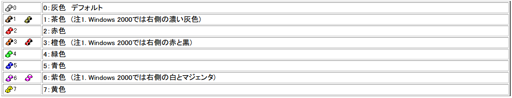

- ８. カスタマイズ customize
-
付属の
dot.nodokadot.nodokaをカスタマイズすることによって、Windowsおよび各種アプリケーションを自分の好きなキー操作で利用することができるようになります。dot.nodokaはホームディレクトリから検索されます。dot.nodokaは上から下へ読まれていき、重複する記述があれば、より下に書かれているものが有効になります。コメントは#ではじめます。アルファベットの大文字と小文字は区別されません。詳しい文法はsyntax.txtを参照してください。この章を読む前に、
contrib\nodoka-settings.txtを読んで付属の設定ファイルについて理解を深めておくことをお勧めします。- i. キー割り当ての変更
-
キー割り当てを変更するには、以下のように記述をします。
key KEY = KEY や FUNCTION …
=より左のKEYをキーボードで押すと、Windows へは=より右のKEYが順番に入力されます。また、右にFUNCTIONが書かれている場合はウィンドウの最大化や移動などの機能が実行されます。KEYはキーボード定義で定義されるもので、デフォルトでは109.nodoka又は104.nodokaで定義されているKEYが使用できます。図示したものは、こちら。- モディファイヤの指定
-
KEYの前に以下のような記号を付けることによって、コントロールキーなどの状態を表現できます。また、これらをモディファイヤと呼ぶことにします。例えば、C-を用いるとコントロールキーが押された場合を記述でき、以下の設定例では、Control + A を押した時に、HOME キーが入力されます。
key C-A = HOME
■ コントロールキー、Altキー、Shiftキー、NumLockキー、CapsLockキー、ScrollLockキーの状態を示すモディファイヤ
C-は、Control が押されていることを表します。M-かA-は、Alt が押されていることを表します。S-は、Shift が押されていることを表します。W-は、Windows が押されていることを表します。NL-は、NumLock がロック状態であることを表します。CL-は、CapsLock がロック状態であることを表します。SL-は、ScrollLock がロック状態であることを表します。
■ 論理的なモディファイヤ
L0-〜L9-, LA-〜LF-は、ロックキーの項をご覧ください。M0-〜M9-は、モディファイヤキーの定義の後段をご覧ください。
■ カタカナキーや、IMEの状態を示すモディファイヤ （Microsoft Office系アプリとMS-IMEの組み合わせでTSF有効な場合、正しく取得できません。）
KL-は、カナ がロック状態であることを表します。(オプション (KL-)指定が必要となります。def option KL- = enable )
109 キーボードなら、Control + Shift + ひらがな。
104 キーボードなら、Control + Shift + CapsLock。
なお Microsoft Office IME2010 変換入力中に未確定の文字があるとき、ローマ字入力とかな入力を切り替えると認識が一文字遅れます。
またIME上のKANAをクリックした場合は確定していても遅れます。Google日本語入力も似たような不具合があります。
IL-は、IME が On になっていることを表します。 IMEがOnになったあとで、一文字キー入力すると、IC-も付くので、IME On中を判定させる場合、IL-*IC- を使うことになります。IC-あるいはI-は、IME で変換中であることを表します。
IH-半角入力であることを示します。全角入力時には追加されません。IK-カタカナ入力であることを示します。ひらがな入力時には追加されません。IJ-日本語入力であることを示します。英数入力時には追加されません。IW-変換候補ウィンドウが開いていることを示します。
なお、これらKL-, IL-, IH-, IK-, IJ- は、TSF(Text Services Framework)が使える場合には、IMM32ではなく、そちらから取得します。ただし、お使いのIME種別やアプリケーションに依存して、正しく取得できないことがあります。またWindows 2000では、IH-, IK-, IJ-は機能しません。
また、IW-については、Google日本語入力では候補ウィンドウでは認識するものの、サジェストウィンドウでは認識できません。またx64環境の32bitアプリでは認識できません。また Micorosoft Word 2010も認識できません。
また、IH-, IK-, IJ- については、def option UseTSF = false, あるいは、&UseTSF(false)の場合、認識できなくなります。
■ ウィンドウの状態を示すモディファイヤ
MAX-は、ウィンドウが最大化されていることを表します。MIN-は、ウィンドウが最小化されていることを表します。MMAX-は、MDI 子ウィンドウが最大化されていることを表します。MMIN-は、MDI 子ウィンドウが最小化されていることを表します。
■ タッチパッドの状態を示すモディファイヤ 有効にするためにはオプションを設定する必要があります。
T-は、タッチパッドに指が触れていることを表します。TS-は、全てのキーが離されるまでオフにならないことを除けばT-と同じです。TL-は、タッチパッド の左側の領域に、指が触れていることを表します。TLS-は、全てのキーが離されるまでオフにならないことを除けばTL-と同じです。TR-は、タッチパッド の右側の領域に指が触れていることを表します。TRS-は、全てのキーが離されるまでオフにならないことを除けばTR-と同じです。
■ 複数のキーボード(最大8個まで)を接続した場合、どのキーボードからの入力であるかを示すモディファイヤ
K0-からK7-は、それぞれのキーボードからの入力であることを表します。
def option UnitID行が無ければ、表示されません。また指定されたキーボード以外の入力については、K0-となります。詳細については、def option UnitIDの説明をご覧ください。
DP-は、指定した時間内に同じキーが続けて2回押されたことを示します。
def option UseDoublePress行が無ければ、表示されません。詳細については、def option UseDoublePressの説明をご覧ください。
- モディファイヤキーの無視
-
上記の例では左側に
C-Aと記述していますが、この記述では、ロックキーなどは押されていても押されてなくても良いと記述していることになります。たとえば、CapsLock を押したあとで Control + A を押しても、押さずに Control + A を押しても、Windows へは Home が入力されます。特定のモディファイヤの状態を無視したい場合は、モディファイヤに "
*" をつけます。逆にモディファイヤが必ず押されていなければならない場合は付けません。
またモディファイヤが必ず離されていなければならない場合は "~" を付けます。たとえば、key *S-F9 = &WindowMinimize
このように記述すると、F9 又は Shift + F9 でウィンドウを最小化することができますが、例えば、Control + F9 ではできません。
デフォルトでは、暗黙に
~C-~M-~S-*NL-*CL-*SL-*KL-*IL-~IC-*MAX-*MIN-*MMAX-*MMIN-*T-*TS-*TL-*TLS-*TR-*TRS-が指定されていることになっていますが、変更できます。また、Shift は必ず押されていてほしいがほかのモディファイヤはどうでもいいという場合は、
key S-*F9 = &WindowMinimize
というように "
*" をキーの直前に記述します。"~" についても同様です。 - 入力されたキーと同じモディファイヤの指定
-
=より右側でのモディファイヤの指定の方法です。key *S-A = C-*S-B
例えばこのように記述した場合、Shift + A を押すと、Windows へは Shift + Control + B が入力されます。A を押すと、Windows へは Control + B が入力されます。
つまり、
=の右側で*で指定されたモディファイヤは、キーボードで実際に入力したモディファイヤと同じになるように設定されます。したがって、A を B と入れ替えたい場合は、
key *A = *B
key *B = *Aとなります。
- キーを押す/離す
-
KEYの前にモディファイヤと同じようにD-とU-を付けることができます。これは、それぞれキーの押すことと離すことに対応しています。デフォルトでは*D-*U-が指定されています。例えば、key A = B C
という記述は、
key *U-*D-A = D-B U-B D-C U-C
と同じであり、さらに次のものとも同じになります。キーリピートが起こった場合は、
~U-D-Aが何度も実行され、キーを離したときにU-~D-Aが実行されます。key ~U-D-A = D-B U-B D-C
key U-~D-A = U-C - キーリピートした
-
=より左のKEYの前にモディファイヤと同じようにR-を付けることができます。これは、キーリピートが発生したことを表します。デフォルトでは*R-が指定されています。例えば、key A = B
key R-A = Cという記述をすると、A を押しつづけると、
BCCCCCCCCCCCCCCCCCCCCC
と入力されます。とてもややこしいのであまり使わないように、しましょう。 - デフォルトモディファイヤの変更
-
デフォルトでは、左側のキーには
~C-~M-~S-*NL-*CL-*SL-*KL-*IL-~IC-*MAX-*MIN-*MMAX-*MMIN-*T-*TS-*TL-*TLS-*TR-*TRS-*K0-*K1-*K2-*K3-が指定されていますが、これを変更することができます。例えば、key *IC- =
と記述すると、この文以降のデフォルトモディファイヤは
~C-~M-~S-*NL-*CL-*SL-*KL-*IL-*IC-*MAX-*MIN-*MMAX-*MMIN-*T-*TS-*TL-*TLS-*TR-*TRS-*K0-*K1-*K2-*K3-となり 、ICの前の記号が ~ から * に変更され、IME非入力中から、IMEの状態はどちらでも良いことに変更されました。デフォルトモディファイヤの変更を複数行うときには、例えば、
key L0-*IC-~C- =
のように、しなければなりません。以下のように指定するのは間違いです。最後のものしか有効になりません。
key L0- =
key *IC- =
key ~C- = # この行しか有効にならない
- ii. キーマップ定義
-
「のどか」には、キーマップという概念があります。キーマップにカスタマイズしたいキー情報を書き込んでゆき、ウィンドウごとにキーマップを使い分けます。キーマップを定義するには、以下のどれかの文を書いてからキーを設定します。
keymap キーマップ名
keymap2 キーマップ名
window キーマップ名 ウィンドウクラス名
window キーマップ名 ( ウィンドウクラス名 && ウィンドウタイトル名 )
window キーマップ名 ( ウィンドウクラス名 || ウィンドウタイトル名 )例えば、メモ帳で Control + Z を押すと最小化されるが、メモ帳以外のエディットコントロールで Control + Z を押すと単なる Z キーと同じになるという指定がしたい場合は、
window EditControl /:Edit$/ : Global
key C-Z = Z
window Notepad /Notepad:Edit$/ : Global
key C-Z = &WindowMinimizeと記述します。ここで
/Notepad:Edit$/はメモ帳の上にあるエディットコントロールのウィンドウクラス名を表しています。ウィンドウクラス名は正規表現で記述します。: Globalは親キーマップを指定しています。- ウィンドウクラス/タイトル名
-
Windows の全てのウィンドウは、何らかのウィンドウクラスに属しています。例えば、メモ帳のウィンドウクラス名は
Notepadで、エディットコントロールのウィンドウクラス名はEditです。「のどか」は、どのウィンドウでどのキーを押したらどんな動作をするか、ということを区別するために
ウィンドウクラス名とウィンドウタイトル名を用いています。そのために、「のどか」ではウィンドウの重なりの状態を ":" で繋げて表現します。例えば、メモ帳の上のエディットコントロールのウィンドウクラス名ならば、C:\WINDOWS\system32\notepad.exe:Notepad:Edit
と表現します。ただし、一番最初の
ウィンドウクラス名には 、そのアプリケーションのパス名を付けています。window文には、このウィンドウクラス名とウィンドウタイトル名を記述することができますが、ウィンドウクラス名全てを書く必要はなく、正規表現で省略することができます。例えば、
/:Edit$/は全てのエディットコントロールのウィンドウクラス名を表しますし、/:#32770.*:Edit$/ならば、ダイアログボックス上にある全てのエディットコントロールのウィンドウクラス名を表します (#32770はダイアログボックスのウィンドウクラス名)。個々のウィンドウの
ウィンドウクラス名とウィンドウタイトル名を調べるには、タスクトレイメニュー調査(I)...の「ウィンドウの調査」、またはFUNCTION&WindowIdentifyを利用してください。ウィンドウクラス名とウィンドウタイトル名の両方を記述する場合は、括弧で囲みその間を&&か||で区切ります。&&の場合は、両方にマッチするようなウィンドウを表し、||の場合はどちらか一方にマッチするようなウィンドウを表します。例えば、x86版のWordpadと、x64版のWordpadを区別するには次のような記述となります。
# wordpad.exe の x86, x64でキーバインドを変える。
include "109.nodoka" # 109 キーボード設定
keymap Global
# wordpad.exe以外では、non と表示させる。
key C-A = N O N
# x86側のwordpad.exeでは、86 と表示させる。
window WORDPADx86 (/x86/ && /wordpad\.exe/) : Global
key C-A = _8 _6
# x64側のwordpad.exeでは、64 と表示させる。
window WORDPADx64 ( /Program Files\\\\Windows NT/ && /wordpad\.exe/ ): Global
key C-A = _6 _4 - 正規表現について
-
ウィンドウクラス名とウィンドウタイトル名には正規表現が使用できます。正規表現は/.../で囲むか、\m@...@で囲みます (ただし@はどんな文字でも良いです)。正規表現エンジンには Boost.Regex を使用しています。このエンジンでは Perl で使用できる正規表現がほぼカバーされています。よく使いそうなものを挙げておきます。
- "
|" Alternation - "
*" Match 0 or more times - "
+" Match 1 or more times - "
?" Match 1 or 0 times - "
." Match any character - "
^" Match the beginning of the string - "
$" Match the end of the string - "
\b" Match a word boundary - "
\B" Match a non word boundary - "
\w" Match a word character ([0-9a-z_]) - "
\W" Match a non word character - "
\s" Match a whitespace character - "
\S" Match a non-whitespace character - "
\d" Match a digit character - "
\D" Match a non-digit character - "
(" ")" Grouping - "
[" "]" Character class - より詳しくは Boost.Regex: Regular Expression Syntaxを見てください。
- "
- 親キーマップ
-
親キーマップとは、現在のキーマップに適切なキー割り当てが定義されていない場合に、キーを捜しに行くキーマップです。"
:" の後ろに親キーマップ名を書きます。例えば、keymap sub : Global
key C-A = &WindowMinimize
window EditControl /:Edit$/ : sub
key C-A = &KeymapParentと記述した場合、エディットコントロールで Control + A を入力すると、ウィンドウは最小化されます。つまり、
&KeymapParentを記述することで 、親キーマップで定義されたキーを利用することができるのです。もし、親キーマップ名が指定されていなければ&Default扱いとなり、ウィンドウへキーがそのまま入力されます。例えば、下記のように、VMware Workstation使用時には、すべてのキーが&Defalutとなり、何もキー入れ替えされないことになります。
window VMWare /:VMUIFrame/
- デフォルトキー
-
keymap、window、keymap2には、最後にキーを羅列することによってデフォルトキーを定義することができます。例えば、window EditControl /:Edit$/ : Global = A
key *B = *Cと記述すると、B を入力すると C を入力したことになるが、B 以外のキーを入力すると、A を入力したことになります。また、デフォルトキーを指定しなかった場合のデフォルトキーは、
keymapとwindowの場合は&KeymapParentで、keymap2の場合は&Undefinedになります。 - 二段階キーマップ
-
keymap2はデフォルトキーが&Undefinedになって いるようなキーマップで、主に&Prefixを利用して 2 ストロークキーを記述する時に使用します。 - 初期キーマップ
-
dot.nodokaの一番初めの行には、window Global ( // || // ) = &OtherWindowClass
という行が隠れていると考えて下さい。つまり、
dot.nodokaで何もキーマップを指定せずに書き始めると、キーマップ名Globalのキーマップに対するキー定義になるということです。そして、Globalキーマップのデフォルトキーは&OtherWindowClassが設定されています。 - 矛盾したキーマップの指定
-
同じキーマップに対する
keymapやwindowやkeymap2は何度でも指定できますが、矛盾する指定をしてはいけません。例えば、keymap Amap : Global
という指定は問題ありませんが、
...
keymap Bmap : Amap
...
keymap Amap : Global
...keymap Amap : Global
...
keymap Bmap : Amap
...
keymap Amap : Bmap # 矛盾
...という指定はしてはいけません。この場合、
keymap Amap : Bmapのかわりにkeymap Amap : Globalが指定されたものとみなされます。エラーは出ません。 windowに複数該当する場合-
例えば、
window EditControl /:Edit$/ : Global
key A = A space E D I T enter
key B = B space E D I T enter
window Notepad /:Notepad/ : Global
key A = A space N O T E P A D enter
key C = C space N O T E P A D enterという記述をしたとします。ここで、「メモ帳」を立ち上げると、メモ帳の
ウィンドウクラス名はC:\WINDOWS\system32\notepad.exe:Notepad:Edit
となっているので、
/:Edit$/と/:Notepad/は両方共もメモ帳のウィンドウクラス名に該当します。この時、A を入力すると、メモ帳には「a notepad」と表示されます。これは、重複する記述があれば、より下に書かれているものが有効になるからです。しかし、B を入力した場合は、重複していないので、メモ帳には「b edit」と表示されることになります。B を入力した場合に、内部で行われる処理は以下のようになります。
- まず
ウィンドウクラス名は/:Notepad/に該当しますが、キー割り当てがないので、windowのデフォルトキーである&KeymapParentが採用されます。 &KeymapParentは親キーマップの参照なので、Globalキーマップを参照します。- そうすると、
Globalキーマップでも B の割り当てがないので、Globalキーマップのデフォルトキーである、&OtherWindowClassが採用されます。 &OtherWindowClassが採用されると、まず、他に該当するウィンドウクラス名がないかどうか探します。もしなければ、&Default扱いとなります。この場合は/:Edit$/に該当します。/:Edit$/に該当したので、/:Edit$/の B が採用されます。したがって、「b edit」と表示されることとなります。
- まず
- キーマップが影響する定義
-
以下の単語で始まる定義は、キーマップ毎に定義できます。
key ...キー割り当ての変更event ...イベント定義mod ...モディファイヤキー割り当ての変更
- iii. モディファイヤキー割り当ての変更
-
mod モディファイヤキー名 = キー名 …
mod モディファイヤキー名 += キー名 …
mod モディファイヤキー名 -= キー名 …
最初の 3 つは、キー名で指定したキーをモディファイヤキーにしたり (
=) 追加したり (+=) 削除したり (-=) します。各キーマップ毎に割り当てます。明示的に割り当てない場合は、親キーマップから引き継がれます。例えば、mod shift += 無変換
は、無変換 キーを shift モディファイヤキーにします。従って、
key S-A = X
という記述があった場合に、無変換 + A を押すと X を入力したことになります。正確には、無変換押す X押す X離す 無変換離す というキーが Windows へ入力されます。これでは都合が悪いということは多いと思われるので、
key *無変換 = *LShift
として 無変換 キーを押すと LShift が入力されるように割り当てます。そうすれば、Windows へは LShift押す LShift離す X押す X離す というキーが入力されます。
モディファイヤキー名には、
shift(S),alt(meta,menu, A, M),control(ctrl, C),windows(win, W),mod0〜mod9(M0〜M9)が記述できます。括弧の中の名前も使用できます。mod0〜mod9(M0〜M9)は「のどか」の中でのみ有効なモディファイヤで、例えば以下のように使用します。mod M0 = Up
key M0-Left = Left Upこのように割り当てると、↑ を押しながら ← を押すとカーソルが左斜め上へ移動することになります。
- 真のモディファイヤ
-
モディファイヤにしたいキーの前に "
!" を付けると、真のモディファイヤになります。例えば、mod shift += !無変換
key 無変換 = Y
key S-A = Xと記述した場合、無変換 + A を押すと X押す X離す というキーが Windows へ入力されます。Windows からは、無変換 キーが押されたということは分かりませんし、Y も Windows へ入力されることはありません。つまり、真のモディファイヤに定義されているキーや
FUNCTIONなどは実行されません。以下のような行を記述すると、
mod !モディファイヤキー名
そのモディファイヤキー名に割り当てられているモディファイヤを全て真のモディファイヤに変更します。
注意：上記のような設定の場合、Shiftキーと無変換キーを押しても、Shiftキーしか認識できません。他のモディファイヤーでも同様となります。
- One Shot モディファイヤ と SandS
-
モディファイヤにしたいキーの前に "
!!" を付けると、One Shot モディファイヤになります。たとえば、mod shift = !!LShift
key S-A = X
key S-LShift = Yと記述した場合、LShift を押してすぐ離した場合は、Windows へは、Y が入力されますが、LShift + A を入力した場合は、X のみが Windows へ入力されます。
以下のような行を記述すると、
mod !!モディファイヤキー名
そのモディファイヤキー名に割り当てられているモディファイヤを全てOne Shot モディファイヤに変更します。
一般的には SandS (Space and Shift)と呼ばれているスペースキーをシフトキーとして使用するには、次の記述を実施してください。
mod shift += !!Space
キーリピート有りにしたい場合には、次のOne Shot(キーリピート有)の項を参考にすると、下記となります。
mod shift += !!!Space
シフトを押したけれども、取りやめた時にスペースが入ることを防ぐには下記となります。( http://jisx6004.client.jp/mayu2.html を参考にしました。)
mod shift += !!Space
key R-*Space = &Ignore - One Shot (キーリピート有)
-
One Shot モディファイヤは通常キーリピートしませんが、"
!!!" を付けると、キーリピートをするようになります。例えば、mod shift = !!!Up
とすると、↑ を押しながら何か別のキー (例えば A) を押すと Shift + A と同じことになりますが、↑ を押しっぱなしにすると ↑ がキーリピートして、カーソルが上へ動くということになります。
キーリピートが開始するまでの時間をオプション (
delay-of !!!) で設定できます。 - ロックキー
-
「のどか」には、「のどか」の中でのみ有効なロックキーが存在します。これらはキーのモディファイヤとして
L0-〜L9及びLA〜LF-を書くことができ、&Toggleを使うことによりトグル あるいは、ロックかアンロックの状態に変更させることができます。例えば、key ひらがな = &Toggle(L0)
key L0-A = Bと記述すると、ひらがな キーがトグル状態になっているときに A を押すと Windows へは B が入力されます。
- iv. キーシーケンス定義
-
keyseq $キーシーケンス名 = KEY や FUNCTION …
keyseqを使うことで、一連のキー入力に対して名前を付けることができます。例えば、keyseq $Right2Times = Right Right
key C-F = $Right2Timesとすると、Control + F で右に二つカーソルを進めることができます。
key C-F = Right Right
は、
$Right2Timesという名前が定義されないこと以外は、先の例と同じになります。
$ToggleIME, $WindowClassName, $WindowTitleName, $NodokaVal などが、のどかのプログラム内部あるいは、104.nodoka、109.nodoka、emacsedit.nodoka などで定義されているので、include している設定ファイルの中で、ユニークな使われていないキーシーケンス名を用いる必要があります。 - v. イベント定義
-
event EVENT = KEY や FUNCTION …
あるイベントが起こったときに
KEYやFUNCTIONを実行します。イベントはキーマップ毎に定義され、親キーマップにイベントが定義されていてもそれは無視されます。EVENTには以下のものが指定できます。prefixed:&Prefixによってキーマップが指定された時。before-key-down: キーが押された時。after-key-up: キーが離された後。
- vi. キーボード定義
-
基本となるキーボード定義は
109.nodoka又は104.nodokaに書かれています。図示したものは、こちら。- キー定義
-
キーボードの物理的なキーを定義します。
def key キー名… = スキャンコード…
キーが発生する
スキャンコードを記述していきます。スキャンコードは数字で書き、E0-やE1-という拡張キーフラグをつけることができます。def key Pause = E1-0x1d 0x45
このように一連のスキャンコードを発生させるキーにはスキャンコードを書き並べます。
- モディファイヤ定義
-
キーボードの物理的なモディファイヤキーを定義します。
def mod モディファイヤ名 = キー名…
モディファイヤ名には、shift (S),alt(meta,menu, A, M),control(ctrl, C),windows(win, W)が記述できます。括弧の中の名前も使用できます。 - 同期定義
-
&Syncに使用するスキャンコードを定義します。def sync = スキャンコード…
&Syncが実行されるとき、「のどか」はこのスキャンコードを Windows に送ります。そして、各ウィンドウがこのキーが入力されたことを「のどか」へ連絡してくるまで処理を中断します。このようにして同期をとるので、このスキャンコードが不正に設定されていると、同期がとれず「のどか」が 5 秒ほど固まります (つまり 5 秒ほど何も入力できなくなります)。 - 別名定義
-
キーの別名を定義します。
def alias 別名 = キー名
別名が既存のキー名と同じだった場合は、別名のほうが優先されます。
- 代用定義
-
あるキーを別のキーとして代用します。
def subst KEY = KEY や キーシーケンス …
キーが入力されると、まずこの代用定義によって入力されたキーが置き換えられます。その後、キー割り当ての変更に従って変換されます。
def subst A = B
key B = C
上記の例では、A を入力すると、まず代用定義で B が押されたことになって、B が入力された場合は C が最終的に Windows へ入力されるので、結局 A を押すと C が押されたことになります。
代用定義は、キーマップでキーが変更されるより前に実行されます。例えば、109 キーボード上で 104 キーボードや Dvorak のエミュレートをしたいときに使用します。
=の左右はキー割り当ての変更のものと同じものが指定でき意味も同じになりますが、右側は先頭がFUNCTIONではなくKEYでなければならず、先頭のKEYしか意味を持ちません。以下色々な例。
def subst A = C-B
key *B = S-*C
上記の例では A を入力すると、最終的に Shift + C が Windows へ出力されます。
def subst A = B C D $Hoge &Toggle(Lock0)
上記の例では A を入力すると、B が Windows へ出力されます。
C D $Hoge &Toggle(Lock0)は無視されます。keyseq $COLON = ~S-*Colon
def subst S-*Semicolon = $COLON
上記の例では Shift + ; を入力すると、: になり、Control + Shift + ; を入力すると、Control + : になります。
- オプション
カナロック(
KL-) -
ローマ字かな変換入力では無い かな直接入力の状態であるカナロック
KL-を正しく 取得するように します。def option KL- = enable
このオプションを設定しない場合、カナロックの状態は正しく取得できません。
109 キーボードでは Alt + ひらがな でカナロックとなります。104キーボードでは、Control + Shift + CapsLock でカナロックとなります。
例えば、カナロック時に、"a"キーを押すと通常、"ち" が入力されますが、"こ" が入力されるようにするには、次のように記述します。
key IL-*IC-KL-A = &SendText("こ")
かな入力時には、"こ"が、ローマ字入力時には"あ"が入力されるようになります。
もし、ローマ字かな変換入力モードと、かな直接入力モードを 他のキーで切り替えたい場合には、&VK(0x15)を お使いください。
下記では、Shift-F5キーで、ローマ字かな変換入力モードと、かな直接入力モードを切り替えます。key S-F5 = &VK(0x15)
また、半角カタカナや、全角英数、全角ひらがな、全角カタカナなどの入力モードに切り替えたい場合には、&SetImeConvStatus()をお使いください。
なお、カナロックおよび &VK(0x15)について、IME 2007, IME 2003, IME 2002 にて動作確認出来ていますが、環境によっては、うまく動作しません。
-
オプション
キーリピートが始まるまでの時間指定
(
delay-of !!!) -
キーリピート有 One Shot (
!!!) のキーリピートが始まるまでの時間を指定します。def option delay-of !!! = DELAY
最初の
DELAY回のキーリピートを無視するように、します。デフォルトでは
DELAYは 0 です。 -
オプション タッチパッドサポート(
sts4nodoka, cts4nodoka, ats4nodoka) -
■ ThumbSense 対応 (AlpsおよびSynapticsのタッチパッドはx86/x64環境対応ですが、Cirque GlidePointは、x86環境のみ対応です。ただし何れも実環境がなく、ほとんどテストできていません。)
キーボードのホームポジションを維持したまま、タッチパッドと併用することで、マウスの操作を実現する ThumbSense(サムセンス)をオプション扱いですが、サポートしています。
もともと、「窓使いの憂鬱」の Sourceforge.net で公開されていたソースコードを取り込んで、実現しています。
ちなみに ThumbSense(サムセンス)のオリジナル紹介ページはこちら。
具体的には、設定ファイルにおいて、モディファイヤ
T-, TS-のサポートを有効にし 、たとえば、タッチパッドに指を置いたまま、Jキーで、左ボタンクリック。Kキーで、右ボタンクリック。などが利用可能です。
また、タッチパッドの領域を左右二つに割って、後述するように、2個のモディファイヤキーとしても利用可能です。別途 下記に示すように、DLLファイル(
sts4nodoka.dll/sts4nodoka64.dll,cts4nodoka.dll, ats4nodoka.dll/ats4nodoka64.dll)が必要です。インストール先フォルダ （通常 32bit OSの場合 C:\Program Files\nodoka )の ts4nodokaフォルダにコピーされているので、nodoka.exeと同じフォルダに コピーしてください。サンプルの設定ファイル thumbsense.nodoka が ts4nodokaフォルダにあるので、必要であれば、DLLファイル同様にコピーして、下記 def option行の次の行で、include "thumbsense.nodoka" されると良いでしょう。
なお、実際に Synaptics あるいは GlidePointのドライバが、インストールされていないと、エラーとなります。
また、作者の環境では、sts4nodoka.dll/sts4nodoka64.dll, ats4nodoka.dll しか動作確認ができていません。cts4nodoka.dll,ats4nodoka64.dll の動作が確認できた方がいらしたら、ご連絡いただければ幸いです。
Synaptics のタッチパッドを使用される場合は、
sts4nodoka.dll(x64環境では sts4nodoka64.dll)を、お使いください。その場合dot.nodokaファイルにて、次のように記述してください。def option sts4nodoka = enable
Cirque GlidePoint のタッチパッドを使用される場合は、
cts4nodoka.dll を、お使いください。その場合 dot.nodokaファイルにて、次のように記述してください。def option cts4nodoka = enable
Alps のタッチパッドを使用される場合は、
ats4nodoka.dll(x64環境では ats4nodoka64.dll)を、お使いください。その場合 dot.nodokaファイルにて、次のように記述してください。def option ats4nodoka = enable
thumbsense.nodoka で定義されている機能は以下の通りです。
# F,J,Space を左ボタンのクリックに割り当てる。
key TS-*F TS-*J TS-*Space = &VK(LButton)
# クリックがリピートされるのを防ぐ
key D-R-TS-*F D-R-TS-*J D-R-TS-*Space = &Ignore
# D,K を右ボタンのクリックに割り当てる。
key TS-*D TS-*K = &VK(RButton)
# クリックがリピートされるのを防ぐ
key D-R-TS-*D D-R-TS-*K = &Ignore
# V を左ボタンのダブルクリックに割り当てる。
key D-T-*V = &VK(LButton) &Wait(10) &VK(LButton)
# クリックがリピートされるのを防ぎ、キー離したときは無視する。
key D-R-T-*V U-T-*V = &Ignore
# G を第4ボタンのクリックに割り当てる。
key TS-*G = &VK(XButton1)
# クリックがリピートされるのを防ぐ
key D-R-TS-*G = &Ignore
# H を第5ボタンのクリックに割り当てる。
key TS-*H = &VK(XButton2)
# クリックがリピートされるのを防ぐ
key D-R-TS-*H = &Ignore
# S,L を押しながらの上下方向ドラッグをホイール回転にする。
key D-TS-*S D-TS-*L = &MouseHook(Wheel, -5)
# リピートは無視。
key D-R-TS-*S D-R-TS-*L = &Ignore
# キーを離したら解除する。
key U-TS-*S U-TS-*L = &MouseHook(None, 0)
# A を押しながらドラッグするとアクティブウィンドウが移動する。
key D-TS-*A = &MouseHook(WindowMove, 1)
# リピートは無視。
key D-R-TS-*A = &Ignore
# キーを離したら解除する。
key U-TS-*A = &MouseHook(None, 0)
# R でウィンドウの最大化/解除をトグルする。
key T-R = &WindowMaximize
# W,B でウィンドウを閉じる。
key T-W T-B = &WindowClose
# M で My Document を開く。
key T-M = &ShellExecute("open", "C:\\WINDOWS\\explorer.exe", "::{450D8FBA-AD25-11D0-98A8-0800361B1103}",, ShowNormal)
# O で Outlook Express を起動する。
key T-O = &ShellExecute("open", "C:\\Program Files\\Outlook Express\\msimn.exe",,, ShowNormal)
# I で Internet Explorer を起動する。
key T-I = &ShellExecute("open", "C:\\Program Files\\Internet Explorer\\iexplore.exe",,, ShowNormal)
# P でコマンドプロンプトを起動する。
key T-P = &ShellExecute("open", "C:\\WINDOWS\\system32\\cmd.exe",,, ShowNormal)
■ タッチパッド左右モディファイヤー化
タッチパッドの領域を、左右に割って、認識することで、2個のモディファイヤーキーとして利用可能です。
左右判定の境界値を、CenterVal に設定します。任意の値が使用可能なので、お使いの環境に合わせて、変更してください。ログウィンドウに、 touchpad: Z:1 X:3439 Y:3108
と表示されている場合、一番真ん中の値 3439が、X座標の値です。
Z:は、押したか、押していないかを1/0で示しています。また Y:の値は実際には評価に用いていません。
以下の制限事項があります。
・GlidePointのタッチパッドは、テスト出来ていませんので挙動は不明です。
・左右同時押しの認識は、Alpsのタッチパッドでは出来ません。
・Synapticsの場合には、左右同時に押した場合、片方を離したときに、もう片方が押されたように認識します。
・タッチパッドが押されたままという認識になることがあります。
・タッチパッドの機能を生かしたままとなるので、ダブルタップすると、マウス左クリックするような機能が有効だと使いにくいです。
Synaptics のタッチパッドを使用される場合は、
sts4nodoka.dll(x64環境では sts4nodoka64.dll)を、お使いください。その場合dot.nodokaファイルにて、次のように記述してください。def option sts4nodoka = enable
def option CenterVal = 3200Cirque GlidePoint のタッチパッドを使用される場合は、
cts4nodoka.dll を、お使いください。その場合 dot.nodokaファイルにて、次のように記述してください。def option cts4nodoka = enable
def option CenterVal = 500Alps のタッチパッドを使用される場合は、
ats4nodoka.dll(x64環境では ats4nodoka64.dll)を、お使いください。その場合 dot.nodokaファイルにて、次のように記述してください。def option ats4nodoka = enable
def option CenterVal = 500モディファイヤーとして、TL-, TLS-, TR-, TRS- が使用可能です。例えば下記のように記述します。key TR-D = S-D # タッチパッド右側を押したまま Dキーを押すと D が入力される。
key TRS-F = S-F # タッチパッド右側を押して離したあとで Fキーを押すと F が入力される。
key TL-J = S-J # タッチパッド左側を押したまま Jキーを押すと J が入力される。
key TLS-K = S-K # タッチパッド左側を押して離したあとで Kキーを押すと K が入力される。 - オプション ゲームパッドサポート (実験実装)
-
プラグイン gamepad.dll を用いて、ゲームパッドからの入力をキーボードやマウス操作にバインドします。
def option gamepad = enable 10000 5000 2500 40 3 50 0xffff 0xffff 0xffff
引数は、enable, ゲームパッドのアナログスティックの最大値、閾値、デッドゾーン値、リピートまでの最初の遅延量、繰り返しの遅延量、入力ループのWait[ms]、スティックやトリガー、ハットキー、ボタンのリピートフラグ(abit, bbit, cbit の各1bit、1でリピート有り、LSB)です。
上記の例では、入力ループのWait指定に50msとしていますが、CPUリソースを消費する場合には、より大きな値にしてください。
プラグイン gamepad.dll は、DirectX 8互換で実装しています。詳しくはソースコードを ご覧ください。gamepad.dll を改造して、任意のデバイスからの入力を受けれるようにすると、のどか のキーボードハンドラーにて、キーを押したと判断させることが可能です。仮想キーは、E1- を用いています。
ゲームパッドが複数接続された環境では、最初に見つかったデバイスが有効となります。
Windows Vista や Windows 7 では、ユーザアカウント制御による確認ダイアログが出ているときには、操作不能となります。
また、高DPI に対応していないので、高い解像度のディスプレイをお使いの場合では、のどか(nodoka.exe あるいは nodoka64.exe)のプロパティの互換性タブにおいて、高DPI設定では画面のスケーリングを無効にする。にチェックしてください。ゲームパッドからの入力は、下記に示すキー入力イベントに変更されます。
イベント キー名称 スキャンコード リピートフラグ 備考 X軸増 GP_X0 E1-0x20 abit0 Xbox360 コントローラー 左スティック 右 X軸減 GP_X1 E1-0x21 abit1 Xbox360 コントローラー 左スティック 左 Y軸減 GP_Y0 E1-0x22 abit2 Xbox360 コントローラー 左スティック 下 Y軸増 GP_Y1 E1-0x23 abit3 Xbox360 コントローラー 左スティック 上 Z軸増 GP_Z0 E1-0x24 abit4 Xbox360 コントローラー LTボタン Z軸減 GP_Z1 E1-0x25 abit5 Xbox360 コントローラー RTボタン X回転増 GP_RX0 E1-0x26 abit6 Xbox360 コントローラー 右スティック 右 X回転減 GP_RX1 E1-0x27 abit7 Xbox360 コントローラー 右スティック 左 Y回転減 GP_RY0 E1-0x28 abit8 Xbox360 コントローラー 右スティック 下 Y回転増 GP_RY1 E1-0x29 abit9 Xbox360 コントローラー 右スティック 上 GP_RZ0 E1-0x2a abit10 GP_RZ1 E1-0x2b abit11 GP_S0 E1-0x2c abit12 GP_S1 E1-0x2d abit13 POV GP_UP E1-0x2e bbit0 Xbox360コントローラー ハットキー 上 POV GP_UPRIGHT E1-0x2f bbit1 Xbox360コントローラー ハットキー 右上 POV GP_RIGHT E1-0x30 bbit2 Xbox360コントローラー ハットキー 右 POV GP_DOWNRIGHT E1-0x31 bbit3 Xbox360コントローラー ハットキー 右下 POV GP_DOWN E1-0x32 bbit4 Xbox360コントローラー ハットキー 下 POV GP_DOWNLEFT E1-0x33 bbit5 Xbox360コントローラー ハットキー 左下 POV GP_LEFT E1-0x34 bbit6 Xbox360コントローラー ハットキー 左 POV GP_UPLEFT E1-0x35 bbit7 Xbox360コントローラー ハットキー 左上 ボタン1 GP_B0 E1-0x40 cbit0 Xbox360 コントローラー Aボタン ボタン2 GP_B1 E1-0x41 cbit1 Xbox360 コントローラー Bボタン ボタン3 GP_B2 E1-0x42 cbit2 Xbox360 コントローラー Xボタン ボタン4 GP_B3 E1-0x43 cbit3 Xbox360 コントローラー Yボタン ボタン5 GP_B4 E1-0x44 cbit4 Xbox360 コントローラー LBボタン ボタン6 GP_B5 E1-0x45 cbit5 Xbox360 コントローラー RBボタン ボタン7 GP_B6 E1-0x46 cbit6 Xbox360 コントローラー BACKボタン ボタン8 GP_B7 E1-0x47 cbit7 Xbox360 コントローラー STARTボタン ボタン9 GP_B8 E1-0x48 cbit8 Xbox360 コントローラー 左スティックボタン ボタン10 GP_B9 E1-0x49 cbit9 Xbox360 コントローラー 右スティックボタン ボタン11 GP_BA E1-0x4a cbit10 ボタン12 GP_BB E1-0x4b cbit11 ボタン13 GP_BC E1-0x4c cbit12 ボタン14 GP_BD E1-0x4d cbit13 ボタン15 GP_BE E1-0x4e cbit14 ボタン16 GP_BF E1-0x4f cbit15 実際の使い方の例ですが、設定ファイル gamepad.nodoka, gamepad-mouse.nodoka (Xbox360コントローラ用), gamepad2-mouse.nodoka (ELECOM JC-U2410TBK用) を ご覧頂き、参考にしてください。それぞれの定義内容は下記となります。
gamepad.nodoka では、各ボタンやスティックの操作をキー 0〜9 W,X,Y,X,Z,- や A〜V に割り当ててあり、テスト用に、どのボタンやスティックが使えるか判断するために、お使いになれます。各ボタンやスティックのリピートはオフです。
また gamepad-mouse.nodokaでは、Xbox360コントローラ用に定義しており、マウスの操作(右側のスティックで移動。LT,RTでポインタ移動の倍速と減速のモディファイヤー。LB, RBをそれぞれ右ボタンクリック、左ボタンクリック、左側のスティックの上下をホイール、ボタンA,B,X,Y にそれぞれ Enter, Esc, BS, LCtrl )に割り当てています。ドラッグを可能にするために、ボタンのみリピートをオフにしています。
Xbox360コントローラの場合、公式ドライバと非公式ドライバが存在しますが、公式ドライバにて動作確認しています。なおワイヤレスタイプでは、無操作のまま放置して、接続が切れた時に、gamepad.dllでの処理も終了するため、再度 、設定ファイルをロードしてください。
gamepad2-mouse.nodoka では、ELECOMのUSBゲームパッド用の定義としており、マウスを左側のアナログパッドで移動させ、ボタン1=Enter, ボタン2=Esc, ボタン3,4がホイール、ボタン5,6がマウスの左右ボタン、ボタン7,8をマウス移動量加速と減速のモディファイヤーとしています。ボタンのみリピートをオフにしています。
ELECOM USBゲームパッドでは、ハードウェアでの各ボタンの連射機能がありますが、遅いので、オフの方が良いようです。
- オプション マウスイベントフック
-
マウスによる入力イベントをキー入力として扱います。これは、YAMY によるマウスイベントフック機能を、のどか に取り込んだものです。&MouseHookも ご覧ください。
def option mouse-event = true
この設定を行うと、次に示すマウスイベントが、キー入力として扱われます。 なお、あらかじめ nodoka.exe, nodoka64.exe の起動時引数として、 -m が設定されている必要があります。-m指定されて起動しているかどうかは、ログウィンドウの先頭で、「use Mouse LL Hook」が表示されているか御確認ください。
例えば key MButton = LButton LButton と記述すれば、中ボタンクリックが、左ボタンのダブルクリックになります。
イベント キー名称 スキャンコード 備考 マウスドラッグ Drag E1-0x00 def option drag-threshold により設定されたピクセル移動量の閾値に達すると、Downが発生し、ドラッグをやめると、Upが発生します。 左ボタン LButton E1-0x01 右ボタン RButton E1-0x02 中ボタン MButton E1-0x03 ホイール前進 WheelForward E1-0x04 注1. Down後すぐにUpが発生します。モディファイヤーキーにすることはできません。 ホイール後退 WheelBackward E1-0x05 注1 Xボタン1 XButton1 E1-0x06 Xボタン2 XButton2 E1-0x07 横スクロールライト(チルト) TiltRight E1-0x08 注1、注2 横スクロールレフト(チルト) TiltLeft E1-0x09 注1、注2 注1. Down後すぐにUpが発生します。モディファイヤーキーにすることはできません。
注2. Windows Vista以降。
注3. Windows Vista以降において、ユーザアカウント制御を有効にしている場合、UACによる昇格が発生し、確認ダイアログが表示されたときに、マウスやキーボードによるイベントが、そのダイアログに届かないことがあります。その場合には、のどかを終了か一時停止する必要があります。
注4. キー定義は、add-mouse-gamepad.nodoka で定義されています。
注5. 調査ウィンドウを用いて、マウスイベントのコード調査を実施できますが、キー入力イベントとは異なり、実際にマウスイベントが入力されます。
これは、調査ウィンドウを閉じれなくなることの回避策です。注6. YAMYとは異なり、標準権限で動作させたときに、管理者権限で実行しているアプリにも、マウスイベントは届きます。
def option drag-threshold = 50
この設定は上記表のマウスドラッグにおいて、ドラッグを開始してから、Downを発生させるまでのマウス移動量を示すピクセル値を指定します。
0もしくは、記述がない場合には、Dragは発生しません。
- オプション IME オン/オフ時のキャレット点滅時間指定
- オプション キーリピート速度設定
-
コントロールパネル/キーボードでの設定と同様にキー入力してから、リピートするまでの時間、および、リピート開始後のリピート間隔を設定します。
def option KeyboardDelay = enable 200 20
引数は、enable あるいはdisable、キー入力開始してからリピート開始までの時間[ms]、および、キーリピート開始後のリピート間隔[ms]です。
disableにすると機能しません。リピート開始までの時間の値域は 100から3000msec、リピート間隔は、5msecから500ms ですが、PCの性能に依存し、滑らかなキーリピートにならないことがあります。 またキー入力をカスタマイズしているWordやExcelなどでは、まとめてリピートしたり、リピートし続けるという問題が出ることがあります。
Pause/Breakキーなどリピートしないキーでは機能しません。またマウスイベントフックしたキーでは機能しませんが、GamePadでリピート入力にしたボタンのリピート速度は変更可能です。
最大リピート時間設定def option KeyboardDelayMax = enable 20000
引数は、enable あるいは disable と リピート最大時間[ms] です。disableの時には、機能しません。キー入力後、リピートが続いた場合、設定したリピート最大時間になると、そのキーによるリピートを取りやめるために、そのキーのUpを実際に、キーがアップされていなくても入力したことにします。
実際に、キーが押されている場合でも、Upが挿入されるので、キーリピートは、そこで不連続となりますが、それ以外の弊害はありません。
また、def option KeyboardDelay が enable でない場合には、無効です。
なお、モディファイヤーキー押しっぱなしなどの不具合事例には、対応できません。
キーごとのリピート設定def option KeyboardDelayKey = 0x00 200 20 0 0
第1引数は、scan code、第2引数は、リピート開始までの時間[ms]、第3引数は、リピート間隔[ms]です。第4引数は、キー入力遅延時間[ms]ですが、未実装です。0を指定してください。第5引数は、0〜7であり、複数キーボード接続時に用います。 複数キーボード対応オプション未使用の場合には、0を指定してください。
def option KeyboardDelayでは、すべてのキーのリピート速度を設定しますが、こちらは、キー個別に設定するものです。
例えばカーソルキーやスペースキーだけ、他のキーよりもリピート速度を変更することなどが可能となります。
第1引数の scan code定義については、109.nodokaなどのキー定義ファイルを 御覧頂くか、調査ウィンドウでスキャンコードの調査を御利用ください。scan codeには、無し、E0-、E1-、E0E1- を付けて、すべてのキーを表現可能です。例えば、スペースは 0x39、カーソルUP E0-0x48、カーソルDOWN E0-0x50、カーソルLEFT E0-0x4b、カーソルRIGHT E0-0x4d となります。
この定義は、キーごとに複数行記述可能ですが、先に def option KeyboardDelay の記述が必要で、かつ enable で無いと機能しません。 - オプション ウィンドウのフォーカス変更検出
-
各アプリケーションのウィンドウが最前面になるなどしてフォーカス変更されたときに、キーイベントを発行します。
def option FocusChange = enable
発行されるキーイベントは、FocusChange (E1-0x1f)の Upイベントです。Downは発行されず、通常のキーとして、そのアプリケーションに入力されることは無いでしょう。
例えば、次に示すように記述すると、メモ帳がフォーカスされるたびに、指定したHelpMessageが通知領域に表示されます。def option FocusChange = enable
window notepad /notepad\.exe/ : Global
key U-FocusChange = &HelpMessage("nodoka", "メモ帳です") - オプション TSF使用/未使用の設定
-
IMEの状態取得の際、デフォルトでは、Text Services Framework:TSF とIMM32を併用しますが、IMM32のみ使用するモードに変更します。
def option UseTSF = false
なお制限事項がいくつかありますが例えば、def option UseTSF = false の場合、モディファイヤー IH-, IK-, IJ-は認識できなくなります。
また、ウィンドウごとに設定したい場合には、&UseTSF() も ご覧ください。 - オプション 複数キーボード対応
-
def option UnitIDを使用すると複数キーボードに対応し、モディファイヤーK0-からK7-が使用可能となります。
使用する場合、設定ファイル上で、まず最初は、
def option UnitID = K1 0 0 0
と記述して、設定を再読み込みさせてください。
すると、複数のキーボードが接続されている場合、下記のように、ログウィンドウ上で検出したキーボードのデバイスネームと、def option UnitID で記述すべき雛形def option UnitID = Kx として表示されます。
current device name:\\?\HID#VID_0709&PID_9137&MI_00#7&2373d6f3&0&0000#{884b96c3-56ef-11d1-bc8c-00a0c91405dd}
def option UnitID = Kx 1801 37175 0
current device name:\\?\HID#VID_05A4&PID_1700&MI_00#7&1cec52f0&0&0000#{884b96c3-56ef-11d1-bc8c-00a0c91405dd}
def option UnitID = Kx 1444 5888 0
current device name:\\?\HID#VID_045E&PID_0773&MI_00#8&1bfd2041&0&0000#{884b96c3-56ef-11d1-bc8c-00a0c91405dd}
def option UnitID = Kx 1118 1907 0
current K1 0 0 0
def option UnitID = K1 0 0 0
successfully loaded.この例では、3個のキーボードが検出出来たので、def option UnitID行をコピーして、次に示すように順にK1からK3を割り当てるよう設定ファイルを編集し、保存してください。
def option UnitID = K1 1801 37175 0
def option UnitID = K2 1444 5888 0
def option UnitID = K3 1118 1907 0 # ms mouse保存した設定ファイルを再度読み込ませると、次のようにログウィンドウ上に表示されます。
current device name:\\?\HID#VID_0709&PID_9137&MI_00#7&2373d6f3&0&0000#{884b96c3-56ef-11d1-bc8c-00a0c91405dd}
def option UnitID = Kx 1801 37175 0
current device name:\\?\HID#VID_05A4&PID_1700&MI_00#7&1cec52f0&0&0000#{884b96c3-56ef-11d1-bc8c-00a0c91405dd}
def option UnitID = Kx 1444 5888 0
current device name:\\?\HID#VID_045E&PID_0773&MI_00#8&1bfd2041&0&0000#{884b96c3-56ef-11d1-bc8c-00a0c91405dd}
def option UnitID = Kx 1118 1907 0
current K1 1801 37175 0
def option UnitID = K1 1801 37175 0
current K2 1444 5888 0
def option UnitID = K2 1444 5888 0
current K3 1118 1907 0
def option UnitID = K3 1118 1907 0
successfully loaded.無事設定出来たようです。現在接続されているキーボードからキー入力してみて、指定したK1-からK7-のモディファイヤーが付いているか御確認ください。
注意事項
・デバイスドライバ使用モードのみサポートとなります。キーボードLLフック時には正しく機能 しません。
・最初の引数で指定可能なUnitIDは、K1からK7となります。これはdef option UnitIDを使用した場合で、関連付けが見つからないキーボードはK0-とするためです。残りの引数はキーボードのVender IDやProduct IDですが、ログウィンドウ上でdef option UnitID = Kx行で表示されたものを使用してください。
・モディファイヤー K0-からK7-は原理上、キーを押した(D-の)ときではなく、キーを離した(U-)ときからとなります。従って、異なるキーボードから入力した場合、最初のD-のところで、キーバインディングの変更は出来ません。こうなってしまう理由は、キーボードからキー入力があった場合、のどかのデバイスドライバを含むキーボードドライバ よりも、上のレイヤー(WM_INPUT/raw input)にて、初めて入力されたキーの発行元キーボードが判明するためです。実際WM_INPUTが発生するのは、のどか側でキーバインディングを変更した後となるため、そのような動きとなります。
なお本制限事項を改善するdef option FakeUpの項もご覧ください。・キーボードを新たにPCに接続した場合において、K1からK7のいずれかに割り当てる場合には、def option UnitIDの行を追加してください。
・キーボードを抜き差しした場合には、再度設定ファイルを読み込み直してください。Kx-モディファイヤー指定が異なる可能性があります。
また、def option UnitID指定が有っても見つからないキーボードは、K0扱いとなります。・キーボードを検索していますが、実際には、マウスやリモコンなども検出されます。リモコンを操作して、実際にログウィンドウ上で、指定したKx-モディファイヤーが付いたものが入力されているならば、使用可能となります。
・PS/2キーボードも識別可能ですが、PS/2キーボードが複数接続された環境はテスト出来ていません。
・Ver.4.27からUSBではなくBluetoothキーボードに対応しました。また一部のUSBキーボードで、0 0 0となってしまうキーボードにも対応しました。
サンプル
・BadUSBと呼ばれる悪意を持ったUSBキーボードデバイスからのキー入力を抑止
設定ファイルno_badusb.nodokaを用意しました。 設定方法は以下となります。設定されていないキーボードは、すべてK0扱いとなり、キー入力が無効となるので、BadUSBによる悪意を持ったUSBキーボードからのキー入力はすべて抑止されます。
実際に使用していないUSBキーボードなどが存在する場合には、USBに接続してみて、キー入力が全くできないことを確認しておけば、BadUSBによる悪意を持ったUSBキーボードデバイスが挿されるようなことがあっても安心ですが、離席時にはWindows側で画面のロックをするなどされた方が、より効果的です。なお画面のロック中はスクリーンキーボード以外からの入力は禁止されます。指紋スキャン認証によるログインなどがお勧めです。
デフォルトのdot.nodokaファイル上で、サンプルへのinclude指定がコメントアウトされているので、有効にするには 行頭の#(コメント指定)を削除してください。
その後、設定ダイアログから、「再読み込み」ボタンを押して、設定ファイルを反映させるとキー入力できな くなった場合は、機能し始めています。
その場合は、のどかを一時停止してください。なお一時停止中は、BadUSBキーボードを含む全てのキーボードの入力が許可された状態となります。
dot.nodokaの31行目#include "contrib\\no_badusb.nodoka" # (11) BadUSBによる悪意を持ったキーボードからの入力を抑止します
no_badusb.nodoka のデフォルト記述では、3行目と5行目において、PS/2接続の キーボードをK1(英語キーボード)あるいはK2(日本語キーボード)に設定しているので、多くのノートPCでは、このままの設定で大丈夫です。
変更が必要ならば、本節 オプション 複数キーボード対応の冒頭をご覧いただき、使用許可を与えるキーボードが設定されるよう修正してください。
10行目では、複数キーボード認識タイミングの変更を実施しています。
デフォルトでは20msを指定していますが、ときどき判別に失敗して抑止したキーボードからのキー入力が出来る/抑止していないキーボードからのキー入力が出来ないようならば、 調整してください。
またダミーキーのキーコードの変更が必要となる場合があります。
contrib\\no_badusb.nodoka の冒頭# no_badusb.nodoka 2014-11-11 by G.K.Applet
def option UnitID = K1 0 771 0 # 初めて読み込んだ時に御使いのキーボードの設定が K1になるよう引数を変更してください。
# この設定は PS/2接続の英語キーボード PNP0303が有効になっています。
def option UnitID = K2 0 800 0 # この設定では、PS/2接続の日本語キーボード PNP0320です。
# なお、この no_badusb.nodokaを読み込むと K0扱いになったキーボードからはキー入力できないので編集される場合には必ず、他の設定を選択するか一時停止にしてください。
def option FakeUp = enable 20 84 # 0x54=84 SysRqをダミーキーに設定しています。
key K0-*A = &Ignore
- オプション 複数キーボード認識タイミングの変更
-
def option UnitIDによる複数キーボード認識のタイミングを変更できるようダミーのキー出力を行います。
def option FakeUp = enable 20 00
第1引数 enableあるいはdisable 機能の有効無効を切り替えます。
第2引数 ダミーキーを送った後での待ち時間 0-100[ms]
キー入力が遅くなるので、あまり大きくない方が良いですが、短いとキーを押したとき(D-)のタイミングにならないことがあります。20[ms]程度推奨となり、実際には調整が必要です。
第3引数 ダミーキーのキーコード
00すなわち0x00は、キー定義が存在しないキーであり、拡張キーE1-が付けられたキーコードとなります。
SysRqキー(0x54)を指定する場合には、84になります。多くのアプリケーションで無視されるキーに拡張キーE1-を付けたことになります。
拡張キーE1を用いたキーコードは、add-mouse-gamepad.nodoka で多く使っているので、ぶつからないコードにしてください。
制限あるいは注意事項・def option UnitIDと同様に、キーボードLLフック時には機能しません。
・キー入力ごとに、最初に指定したダミーキーのキーコードを用いて、キーのダウン、アップをデバイスドライバに送り、その後、指定した時間だけ待ちます。WM_INPUT/raw inputから見れば正式なキー入力となるために、def option UnitIDとdef option FakeUpを併用した場合、うまく、キーを離したタイミングではなく、キーを押したタイミングに、モディファイヤーK0-がK7-が切り替わります。ダミーキー出力は、ログウィンドウには表示されません。
・のどか起動時、あるいは設定ファイル再読み込み時、最初のキー入力の際、UnitIDが確定せず、K0モディファイヤー になることがあります。
・待ち時間が短いと全く効果が無いことがあります。
・待ち時間があるために、キーを押し続けて、キーリピートさせたときに、キーを離してもキーリピートが終わらず入力し続けることがあります。
・アプリケーションプログラムによっては、拡張キー指定E1が付いているキーとは認識せずに、E1が無いキーとして認識し実際に入力されることがあります。その場合には、異なるキーコード にしてください。
例えば、0x0a〜0x18、すなわち10から24あたりが未使用なので使えますが、のどかの将来のバージョンや他のアプリで未使用とは限りませんのでご注意ください。
ウィンドウのフォーカス変更検出 ( def option FocusChange )やモディファイヤーキー押しっ放し検出、解除機能 ( def option CheckModifier )でも、拡張キーE1付きのキーコードを送っていますが、同様な制限事項とならないのは、def option FakeUpとは異なり、キーのアップだけを送っているためとなります。 - オプション キー2回押し検出
-
同じキーを2回続けて押した状態を検出し、モディファイヤーDP-が使用可能となります。
def option UseDoublePress = enable 300 10
第1引数 enable/disable 機能の有効無効
第2引数 最初のキー入力から2回目のキー入力があったと判断する時間
キーのダウン/アップ/ダウン/アップが連続してあったことを検出するために、300[ms]程度が適切ですが、ログウィンドウで詳細表示にしてみて、うまくDP-モディファイヤが付くか、ご確認ください。第3引数 DP-モディファイヤーがキーアップの際に付くための待ち時間 0-100[ms]。20ms前後ぐらい必要です。
制限あるいは注意事項
・キーを押した時ではなく、キーを離したときに発生するため、モディファイヤーU-と併用することになります。
・第2引数は別スレッドで検出しているため、キー入力に影響は、ほぼありませんが、第3引数は、その時間だけキー処理を待つので、キー入力の遅延となります。
・その結果、キー入力に待ち時間を挿入するため、キーを押し続けて、キーリピートさせたときに、キーを離してもキーリピートが終わらず入力し続けることがあります。なお、def option FakeUpを併用している場合には、お互いの待ち時間を短く指定することが可能です。
・1回だけ押したときの機能は、そのままなので、必要に応じて定義する必要があります。
使用例
1. Aキーを2回押すと、初めて入力される。
def option UseDoublePress = enable 300 10
key U-DP-A = A
key ~DP-A = &Ignore2. 右シフトを2回押しで、バルーンヘルプを表示させます。
def option UseDoublePress = enable 300 10
key U-DP-LShift = &HelpMessage("のどか", "DoublePress!!")3. 日本語キーボードにおいて、英数キー2回でIME ONにして、1回でIME OFFにします。最初の行で、英数キーを無効(&Ignore)にしていますが、これはお使いのIMEによっては状態が変化することを抑止するためです。2行目でIME ON、3行目でIME OFFの記述となります。
def option UseDoublePress = enable 300 10
key 英数 = &Ignore
key U-DP-~IL-英数 = $ToggleIME
key IL-~DP-英数 = $ToggleIME4. 英語キーボードにおいて、CapsLockキー2回でIME ONにして、1回でIME OFFにします。最初の行で、CapsLockキーを無効(&Ignore)にしています。これをせずに無効にしない場合には、2行目のShift-CapsLockを押したら初めてCapsLockになる記述は不要でしょう。
def option UseDoublePress = enable 300 10
key Caps = &Ignore
key S-Caps = Caps
key U-DP-~IL-Caps = $ToggleIME
key IL-~DP-Caps = $ToggleIME
- オプション デスクトップ上のアイコン表示状態の変更
-
デスクトップ上のアイコンの表示状態を変更します。
def option DesktopListView = 2
引数は、0から4です。0: 通常表示、1: 詳細表示、2: 小さなアイコン表示、3: リスト表示、4: タイル表示
Windows 2000では機能しません。2の小さなアイコン表示を用いると、デスクトップを広く使うことが可能です。
Windows Vista以降で、デスクトップのアイコンが大きなままの場合には、デスクトップ上で、Ctrlキーを押しながら、マウスホイールを操作することで、アイコンサイズを変更してください。
本機能はキーバィンディング入れ替え機能とは無関係です。
- オプション キーボードLLフック
-
引数 -k 解説と使い方
def option で指定する機能ではなく、nodoka.exe あるいは nodoka64.exe の起動時コマンドライン引数に -k をつけた時に、デバイスドライバによるキーフィルタ動作ではなく、ローレベルキーボードフック(WH_KEYBOARD_LL)を用います。
キーボードLLフックで動作している場合には、ログウィンドウの先頭に「use Keyboard LL Hook」が表示されます。またバージョンダイアログ上でも、デバイスドライバのバージョン表示の代わりに、 (nodokad: Keyboard LL Hook Mode) が右上に表示されます。
キーボードLLフックで動作させると、デバイスドライバがインストールされていない環境でも実行可能です。 セットアップでは、デバイスドライバをインストールしないを選択した場合、キーボードLLフックを選択することになります。もし、のどかをインストールせずに、バイナリだけをセットアップから、取り出す場合には、nodoka-4.30_setup.exe /C をコマンドプロンプトから実行してください(この時の場合でも管理者権限が必要となります)。
最小限必要なファイルは、x86環境では nodoka.exe, nodoka.dllと、109.nodokaなどの設定ファイルです。またx64環境では、nodoka64.exe, nodoka64.dll, nodoka_helper.exe が必要となります。
x86環境では nodoka.exe -k を、またx64環境では、nodoka64.exe -k を実行してください。 なお引数を付けなくても、リモートデスクトップ環境であることを検出したら、キーボードLLフックモードで動作するよう4.18から改善致しました。
制限事項
- 次に示すdef option設定は機能しません。これはローレベルキーボードフックは、イベントドリブンなのに対し、フィルタドライバはポーリング動作によるため、デバイスドライバのキー入力の空き時間に、これらのdef option設定を機能させているからです。def option KeyboardDelay, def option KeyboardDelayKey, def option KeyboardDelayMax, def option FocusChage, def option UnitID, def option FakeUp
- 次に示すキーは正常に認識できません（キー入力そのものを検出できなかったり、キーのUpが認識できないこともあります。キーのUpが認識できないと、モディファイヤーキーが押されたままとなることの原因となります。）、これを解消するには、レジストリ設定でScancodeMapを変更するなどが必要です。YAMYでは、これに対応するワークアラウンド を準備されていますが、のどかでもVer4.24から対応しました。オプション 起動時引数 -n をご覧ください。
E1プレフィックスキーが付いたキー Pauseキーなど
半角・全角キー(英語キーボードでは`キー BackQuoteあるいはGraveAccent)
英数あるいはCpasLockキー
ひらがなキー
無変換キー
右シフトキー
なお、右シフトキーが使えないことは致命的なので、ホスト側の のどか設定ファイルでは、window RemoteDesktop /mstsc\.exe/ を記述し、ホスト側でのキー入れ替えは無いことにして、リモート側のどかの設定ファイルでは、下記のような設定をすると良いでしょう。
def key E0RightShift E0RShift = E0-0x36
mod shift += E0RShift
key *E0RShift = *LShift
# 以下は、def option CheckModifier を使う場合に記述してください。
def option CheckModifier = enable 5
key U-*ShiftDownOver = &HelpMessage("nodoka", "Shift") U-LShift U-RShift U-E0RShift
- UAC確認ダイアログなどが表示されたときなど、画面のロック時にキー入力できなくなります。
- スクリーンセーバーによる画面のロックのあとでキーリピートすることがあります。
- インストールせずにファイルコピーして実行させた場合、.nodokaファイルへのメモ帳への関連付けが実行されていないために、設定ダイアログから設定ファイルを開くことが出来ません。その場合には、実行ファイルと同じフォルダにおいたdot.nodokaファイルを直接、編集してください。
- また、Program Files (x86)あるいは、Program Filesフォルダ以下にインストールしなかった場合、権限の異なるアプリケーションの情報が取得できません。
- その他、他のキーボードLLフック(WH_KEYBOARD_LL)を用いたアプリケーションプログラムと同時に動作させた場合の挙動は不明です。
- オプション Windows 8用ワークアラウンド
-
引数 -w 解説と使い方
def option で指定する機能ではなく、nodoka.exe あるいは nodoka64.exe の起動時コマンドライン引数です。Windows 8, 8.1向けで -w をつけた時に、Alt-Tabキーと、Win-Xキーを押したとき、キーカスタマイズ対象から外すことで、Windowsに送られるようになります。
デバイスドライバモードではないキーボードLLフック利用時に、 高整合性(High IL)版である nodoka_hil.exeあるいはnodoka64_hil.exeを用いて管理者権限で起動するのではなく、Alt-TabやWin-Xキーを、キーカスタマイズ対象にしなくても問題が無い場合には、こちらの起動時オプションを御使い下さい。
- オプション モディファイヤーキー押しっ放し検出、解除機能
-
解説と使い方
モディファイヤーキーであるWindows, Shift, Ctrl, AltキーとEnterキーが、押されたままとなることがあります。そのことを検出するために、下記のオプションを準備しました。
def option CheckModifier = enable 5
第1引数は、enable あるいは disable です。enable時に機能します。第2引数は、検出する時間となります。上記の例では、5秒間押されたままであることを検出することになります。値域は1から30であり、最大30秒を指定可能です。上記の例のように5秒間程度で良いと考えます。なお、物理的に、モディファイヤーキーを押したままの操作をした場合にも検出します。
Enterキーは、モディファイヤーキーではありませんが、Enterキーが押されたままとなったという報告もあったために、追加してあります。また、左右に存在するモディファイヤーキーの個々を検出する機能はありません。
実際に検出すると、特別なキーのUpを送ります。具体的に使用する場合には、設定ファイル上で次のように記述します。
def key WinDownOver = E1-0x19
def key ShiftDownOver = E1-0x1a
def key CtrlDownOver = E1-0x1b
def key AltDownOver = E1-0x1c
def key EnterDownOver = E1-0x1e
key U-*WinDownOver = &HelpMessage("nodoka", "Win") U-LWin U-RWin
key U-*ShiftDownOver = &HelpMessage("nodoka", "Shift") U-LShift U-RShift
key U-*CtrlDownOver = &HelpMessage("nodoka", "Ctrl") U-LCtrl U-RCtrl
key U-*AltDownOver = &HelpMessage("nodoka", "Alt") U-LAlt U-RAlt
key U-*EnterDownOver = &HelpMessage("nodoka", "Enter") U-Enter上記では、def key 定義が5行ありますが、この5行は、add-mouse-gamepad.nodoka で定義されています。
キーの入れ替え定義の5行が文末にありますが、この例では、&HelpMessageを用いて、通知領域に、検出したことを表示して、その後、各モディファイヤーキーのUｐを送ることで、押されたままとなる状態の解除を実施しています。
また、上記の設定ファイルでは、検出したことの表示と解除を実現していますが、&HelpMessage()だけを使って通知だけとすることや、あるいは、表示させずにキーのアップだけ実施するなども、用途に応じて、使い分け可能です。また例えば、それらのことは実施せずに、&ShellExecute()などを用いて、5秒間長押ししたときに、プログラムを実行するような使い方も可能です。
■モディファイヤーキーが押されたままとなる原因
キーのUpが認識できなかったときに、モディファイヤーキーの入れ替えを伴うような記述によるキー入れ替えを実行した際、発生することが確認できています。それ以外の原因については特定できていません。
例えば、キーボードLLフック状態で起動した「のどか」で、英数キーを押すと、Downは入力されますが、Upが入力されないことがあります。key W-_1 = C-C
そのとき、上記のような Windowsキーと数字の1キーを押したときに、Ctrl-Cが押されたようなキー入れ替えを行うと、その後、Ctrlキーが押されたままとなります。内部的には、キーが押された個数を数えていますが、Upが来ていないために、押された個数が0になっておらず、まだキーが押されたままであると判断し、上記のような入れ替え設定が実行されると、Ctrlキーが押されたままとなります。
この状態が発生していることを認識できるように、ログの詳細表示の際、下記のようなキーが押された個数を意味する表示を追加しました。
m_currentKeyPressCount:0
* No key is pressed上記は、全てのキーが離れた場合に表示される正常な状態です。異常状態では、全てのキーを離した場合でも、m_currentKeyPressCountは、1以上となり、* No Key is pressed はログに出力されません。
- オプション 起動時引数
-
解説と使い方
nodoka.exe あるいは nodoka64.exe には引数を列挙することで、使用する機能を指定したり、動作を指示したりすることが可能です。以下は nodoka.exe に対して説明を行いますが、nodoka64.exe でも同様です。
なお、インストール時にsetupプログラムは、マウスフックが指定されたならば、マウスフックが使えるように、-m を付けます。引数を設定するには、スタートアップやスタートメニューに登録された「のどか」のプロパティに設定するか、コマンドプロンプトから、c:\Program Files\nodoka\nodoka.exe -m のように指定することになります。
なお、x64(64bit環境)では、nodoka64.exe をお使いください。誤って nodoka.exeを起動しても機能しますが、すでに起動していなかった場合に、32bit版の「のどか」を動かしたことになります。-y 二重起動時に、引数を何もつけないと設定ダイアログが開くよう 4.21から挙動が変更されているので、下記各引数において、必要であれば -y を付けてください。
-L, -l ログウィンドウを起動時に開きます。-Lでは詳細がチェックされた状態となります。二重起動あるいは、すでにログウィンドウが開いている場合、詳細チェックは実行されません。
-m マウスフックを使用可能にします。すでに「のどか」が起動している場合に変更することはできません。
-k キーボードLLフックモードで動作させます。すでに「のどか」が起動している場合に変更することはできません。
-p 設定をロード後、すぐに一時停止状態に移行します。すでに「のどか」が起動している場合には、一時停止状態と実行状態を切り替えます。
-r すでに「のどか」が起動している場合、メニューを表示します。-y を付けないと、正しく動作せず、設定ダイアログが表示されます。
-c0 から -c7 通知領域のアイコンの色を変更します。すでに「のどか」が起動している場合には、色の変更のみが実施されます。関数 &IconColor の項も、ご覧ください。
-n 下記キーのScancodeMapの変更を実施します。既にレジストリ上ScancodeMapで変更済であれば置き換えられません。オプション キーボードLLフック機能(-k)機能利用時に、キーアップが送られてこないキーに対する対応となります。設定ファイルread-keyboard-define.nodokaに、 設定ダイアログのシンボルにて-DUSEFIXNLSを指定したときにキー定義されるよう記述を追加しています。変更されるキーのスキャンコード置き換え前と後の値を下記に示します。
0x29 → E0-0x29 半角/全角, `
0x3a → E0-0x3a 英数, CapsLock
0x70 → E0-0x70 ひらがな
0x7b → E0-0x7b 無変換
-nを付ける場合、起動には管理者権限が必要となります。管理者権限が無い場合、「ScancodeMapの変更に失敗しました(エラーコード=1026)」が表示されます。 その他の注意事項として、のどかの起動時にScancodeMap変更機能が有効にされたあと、のどかの終了時、一時停止時に無効化されます。Windowsのユーザの切り替え時、リモートデスクトップにて接続された時にも、一時的に無効化されますが、キーの押しっぱなしが発生しやすいので、画面のロック時やスリープ時には無効化されません(YAMYでは 、どちらも無効化されます)。
リモートデスクトップ環境で用いる場合、リモートデスクトップ側のキーボード配列に関係なく、ローカルのキーボード配列でキー入力したい場合には、日本語配列の場合には、-DUSEFIXNLSだけでも良いですが、英語配列の場合には、-DUSEFIXNLS;-DUSE104を設定ダイアログのシンボルにて指定してください。-w Windows 8以降において、-kを用いてキーボードLLフックモードで動作させているときに、うまくキー入力できなくなってしまうAlt-TabとWin-Xを、高整合性(High IL)版である nodoka_hil.exeあるいはnodoka64_hil.exeを用いて管理者権限で起動するのではなく、通常権限で用いる場合において、キーカスタマイズ対象から外すことで、Alt-TabとWin-XをWindowsに入力できるようにするものです。
-g 整合性レベルを指定します。
-g 2 では整合性レベルHighとなります。管理者権限での起動が必要となります。ただしWindows 8以降での -wの代わりとなるhil版と同等になりません。
-g 1 は整合性レベルMediumです。省略時のデフォルトとなります。
-g 0 だと整合性レベルLowとなります。なお権限が不足してまともに動作しません。
- オプション 機能制限版のどかについて
-
解説と使い方
インストール時に、のどかセットアップダイアログにおいて、機能制限版にチェックを入れると、マクロ機能を動作しないようにした機能制限版のどかがインストールされます。具体的には、スタートメニューなどに登録されるショートカットの実行ファイル名が、nodoka64_limit.exe あるいは nodoka_limit.exe となります。
購入された場合には、機能制限版と言っても、試用版(サンプル版)とは異なり、起動後、30分で終了するようなことはありませんが、マクロ的機能が一切動作しません。実際、次に示すような機能制限が、存在します。誤って機能制限版をインストールした場合、設定ファイルの読み込み時にエラーとなったり、設定ファイルに記述された機能が一部動作しなくなるので、元に戻す場合には、再インストールを試みるか、ショートカットファイルのプロパティにて実行ファイル名を nodoka64.exe あるいは nodoka.exe に変更してください。
■ 制限される機能の一覧
(1) key文、seqkey文
設定ファイル上で、キーの入れ替え定義を行う、key文、keyseq文は、通常版と異なり、ひとつのキー設定しか機能しません。
もし、複数キー設定を連続して記載した場合、文末の最後のキー定義だけ設定されますので、ご注意ください。
例えば、インストール時に設定されるデフォルトの設定ファイル群(例えばdefault.nodoka, default2.nodoka, emacsedit.nodokaやdot.nodoka)では、まともに動作しないキーシーケンスが存在します。
例えば、key C-_1 = _1 _2 _3 &SetIcon(2) などと記載されている場合、Ctrl-1を押すと 通常版では、123が出力され、のどかアイコンの色が変更されますが、機能制限版では、123は出力されず、最後のFunctionである&SetIcon(2)のみが機能することになります。
もし、&DescribeBindingsを定義したキーがあれば、そのキーを押すことで、設定されているキー入れ替え情報が、ログウィンドウ上に表示されるので、それで設定状況を、ご確認ください。
(2) def key定義について
def key 定義も1個のキーしか定義できません。しかしながら、下記に示すように、PCでは、Pauseキーだけは2個必要なので、それのみ定義可能です。
Pause E1-0x1d 0x45
(3) Functionについて
次に示すFunctionは、設定ファイルで記述されてもエラーにはなりませんが、機能しません。ログウィンドウ上は、詳細をチェックした状態では、is not working. が表示されます。
(4) def optionについて
次に示すdef option機能は、設定ファイルに記述するとエラーとなります。なお、この機能制限版は、キーボードマクロ機能を持ったソフトウェアを排除するようなゲームに対する解決策となるよう準備されたものですが、実際にお使いのゲームなどで、排除されないよう認めてもらうには、そのゲームのユーザサポートなどと交渉される必要があります。
- vii. ファイル読み込み
-
include "ファイル名"
と書くことによって、その行にファイル名 で示されるファイルを挿入し、設定ファイルとして使用することができます。ファイル名はホームディレクトリから検索されます。
include文では、フルパス指定は使用できませんが、相対指定は可能であり、例えば include "contrib\\keitai.nodoka" と記述すれば、ホームディレクトリに存在する contrib ディレクトリのkeitai.nodokaファイルをインクルードすることになります。- ホームディレクトリ
-
ホームディレクトリとは、 設定ファイル格納先ディレクトリのことであり、そう呼びます。include文で指定した設定ファイルが存在するフォルダとしても用います。
下記の順に検索します。 検索状況を確認するには、ログウィンドウを開いて、詳細をチェックした状態で、再読み込みを実施してください。not foundと表示された場合、その設定ファイルは読み込まれていません。loadingと表示された場合、その設定ファイルを読み込み、エラーなく読み込まれたならば、successfully loaded.と表示されます。
- 設定ダイアログにおいて設定ファイルをフルパス指定した場合、その設定ファイルが置かれたフォルダ
%NODOKA%
環境変数 NODOKA で指定したフォルダです。 一か所にまとめたい場合に、定義してお使いください。 のどかインストール時や、Windowsのコントロールパネルから、システム/システムの詳細設定/詳細設定/環境変数で設定可能です。%HOME%
環境変数 HOME で指定したフォルダです。%USERPROFILE%
環境変数 USERPROFILE で指定されているフォルダです。Windowsでは、デフォルトで設定されています。%HOMEDRIVE%%HOMEPATH%
環境変数 HOMEDRIVE と HOMEPATH によって指定されているフォルダです。Windowsでは、デフォルトで設定されています。実行したnodoka.exeが存在するディレクトリ
ほとんどの場合、インストール先となります。
- viii. 条件分岐
-
シンボルを定義して、そのシンボルによって条件分岐させることができます。
define シンボル
例えば次のように記述すると、
if ( シンボル )
〜
else
〜
endifif ( SwapAB )
key *A = *B
key *B = *A
endifSwapABというシンボルがdefineされている場合に、A と B を入れ替えます。「設定(S)...」で
-Dシンボル名を書くことでシンボルを定義することができます。 - ix.
FUNCTIONリファレンス -
&CancelPrefix-
現在、Prefixキーが押されている状態を、解除します。
One Shotモディファイヤーに指定しているキーを離した際に、Prefixを解除することなどに使用可能です。
&ClipboardCopy(text)-
text文字列をクリップボードへコピーします。key S-F3 = &ClipboardCopy(文字列)
もし、そうではなくて、現在選択されているものをクリップボードにコピーしたい場合には、C-C を お使いください。
また次のようにすると、クリップボード経由で、指定した任意の文字列を入力します。key S-F3 = &ClipboardCopy(文字列) &Sync C-V
クリップボード経由にしたくない場合には、&SendText()も任意の文字列入力に使用可能です。
&ClipboardDowncaseWord,&ClipboardUpcaseWord-
それぞれ、クリップボードの中身の文字を大文字化又は小文字化します。
&Default-
入力されたキーをそのまま Windows へ入力します。そのため、「のどか」を起動してない時と同じ動作が期待できます。
&DescribeBindings-
&DescribeBindingsは、現在のキーマップでどのようなキー操作をするとどのような動作が起こるかをログウィンドウに表示します。
デフォルトのdot.nodokaでは、Ctrl-Alt-D に定義しています。 &DirectSSTP(/name/, protocol [, header ...])-
/name/にマッチする名前のゴーストへリクエストを Direct SSTP を使用して送ります。protocol文字列 を省略するとNOTIFY SSTP/1.1になります。header文字列 にカンマで区切ってヘッダを書き並べます。Senderヘッダを省略すると「のどか」の名前が挿入されます。HWndヘッダとCharsetヘッダは「のどか」が適切に指定するので引数として指定してはいけません。選択肢などを表示しても答えを受け取ることはできませんが、「のどか」はゴーストから返事を 5 秒間待ちます。
例:
key F12 = \
&DirectSSTP(/カレン/, \
"SEND SSTP/1.2", \
"Script: " \
"\\1こんにちわ" \
"\\_w[1000]\\0\\s3カレンのこと呼んだ？" \
"\\_w[1000]\\1＞みんな" \
"\\_w[1000]\\0\\s4\\n\\n……。" \
"\\e" ) \
&DirectSSTP(/双葉/, \
"SEND SSTP/1.2", \
"Sender: まゆ", \
"Script: " \
"\\_w[1000]\\0よばれてますよただきちさん。" \
"\\_w[1000]\\1きにするな。" \
"\\e" )
&EditNextModifier(モディファイヤ)と Sticky-Shift-
次にユーザーがキーを入力した時に、
モディファイヤが押されていることにします。例えば、key ESC = &EditNextModifier(M-)
とすると、Alt + X などを ESCAPE X などで代用することが可能になります。
例えば、Sticky-Shift と呼ばれる任意のキーを押したときに、次のキーはシフト有りとするには、以下の記述となります。key Space = &EditNextModifier(S-)
この例では、スペースを押すと、次に入力するキーは、シフト有りとなります。
&EmacsEditKillLineFunc,&EmacsEditKillLinePred-
エディットコントロールで emacs の kill-line のような機能を実現します。使い方は
emacsedit.nodokaを参照のこと。kill-line は非常にややこしい処理をしています。
まず、
C-kの期待される動作は、(C-k-1) カーソルが行末にある場合、クリップボードに改行を追加してテキストからは改行を削除する。
(C-k-2) カーソルが行末以外の場合、行末までをクリップボードに追加して行末までのテキストを削除。
です。「のどか」での定義は、
emacsedit.nodokaでは、keyseq $EmacsEdit/kill-line = \
&EmacsEditKillLineFunc S-End C-X &Sync \
&EmacsEditKillLinePred((Delete), (Return Left))こうなってるはずです。
&EmacsEditKillLineFuncは初回だけ、クリップボードの中身をクリアします。初回でない場合は、クリップボードの中身を「のどか」内部に保存 (※) します。その後
S-End C-Xで行末までを選択し「切り取り」ます。ここで、クリップボードに行末までがコピーされたわけですが、クリップボードの中身には幾つか可能性があります。EDIT コントロールの場合
(EDIT-1) カーソルが行末にあると、「」(からっぽ)
(EDIT-2) カーソルが行末以外だと、「行末までの文字列」
です。IE の中のエディットボックスの場合、
(IE-1) カーソルが行末にあると、「改行」
(IE-2) カーソルが行末以外だと、「行末までの文字列＋改行」
です。
&EmacsEditKillLinePredは、クリップボードの中身を調べて、(EDIT-1) の場合は、※で保存したデータに「改行」を追加してクリップボードへ書き戻します。その後、第一引数、つまり
Deleteを実行します。(EDIT-2) の場合は、※で保存したデータに「行末までの文字列」を追加してクリップボードへ書き戻します。
(IE-1) の場合は、※で保存したデータに「改行」を追加してクリップボードへ書き戻します。
(IE-2) の場合は、※で保存したデータに「行末までの文字列(改行は除く)」を追加してクリップボードへ書き戻します。その後、第二引数、つまり
Return Leftを実行します。このように動作することで (EDIT-1) と (IE-1) は (C-k-1) 相当、(EDIT-2) と (IE-2) は (C-k-2) 相当になります。
&HelpMessage(title, message)&HelpVariable(title)&IconColor(color)-
通知領域（タスクトレイ）における「のどか」のアイコンの色を指定します。colorには、下記 表の0から7が指定可能です。
注1. Windows 2000では、アイコンの色数が16色のため、異なる色となります。
nodoka.exe の引数( -c0〜-c7 )でも、アイコンの色を指定可能です。既に起動済みの場合にも、色だけ変更指示することが可能です。
コマンドプロンプトで、のどかインストールディレクトリに移動し、nodoka -c2[enter] を実行すると、アイコンの色が赤色に変更されます。
引数を付けなければ、アイコンの色は変更されません。4.03以前では、二重起動のエラーダイアログ が表示されましたが、4.04以降では表示されません。
スタートアップなどのショートカットでは、プロパティでのリンク先に、"C:\Program Files\nodoka\nodoka.exe" -c2 のように指定することで、指定の色で起動するようになります。 &Ignore-
なにも起こりません。なにも実施しないがベルを鳴らしたい場合には、
&Undefinedを お使いください。 &InvestigateCommand-
ウィンドウへ送られてくる
WM_COMMANDとWM_SYSCOMMANDを調べ ログに出力します。トグルになっていますので、調査が終わったらもう一度このFUNCTIONを実行してください。さもないとアプリケーションの実行速度が遅くなる可能性があります。ログの出力は&PostMessageや &SendPostMessage で使用することが出来ます。 &Keymap(キーマップ名)-
別のキーマップのキーを指定します。例えば、
keymap sub : Global
key C-A = &WindowMinimize
window EditControl /:Edit$/ : Global
key C-A = &Keymap(sub)というように利用します。この場合、エディットコントロールで Control + A を入力すると、最小化されます。あまり実用的な機能はないかもしれません。ループしないように気をつけて利用してください。
&KeymapParent-
親キーマップ参照。
&KeymapPrevPrefix-
現在のキーマップ (仮に
CURRENTという名前とする) が二段階キーマップの場合、&Prefix(CURRENT)を実行したキーマップで定義されているキーを指定します。引数が無いと 1 段階前のキーマップになりますが、引数に数字を書くとその段階数前のキーマップになります。たとえば、keymap E
key A = &KeymapPrevPrefix(2)
keymap D
key X = &Prefix(E)
key A = D
keymap C
key X = &Prefix(D)
key A = C
key Y = &Prefix(E)
keymap B
key X = &Prefix(C)
key A = B
keymap Global
key X = &Prefix(B)
key A = Aここで X X X X A と入力すると C が、X X Y A と入力すると B が入力されます。
&KeymapWindow-
現在のウィンドウに定義されたキーマップのキーを入力します。プレフィックスキーの入力中に使用すると便利です。例えば
keymap2 NotepadC-X
key A = &KeymapWindow
window Notepad /:Notepad:Edit$/ : Global
key C-X = &Prefix(NotepadC-X)
key A = T E S Tこの場合、メモ帳で Control + X を押した後に A を入力すると、
&KeymapWindowはNodepadキーマップに定義されているキーを入力しようとします。従って、TESTが入力されます。 &LoadSetting("設定名")-
設定ファイルを再読み込みします。"
設定名"設定名を省略すると現在の設定を再読み込みします。 &MouseHook(type, parameter)-
マウスイベントをフックし type で指定されるアクションに変換します。parameter は整数値で、type ごとに意味が異なります。指定できる type parameter は以下の通りです。
- None [初期値]
変換しません。parameter は無視されます。他の type から元に戻す場合に使用します。 - Wheel
マウスの垂直方向の移動をホイールの回転に変換します。変換中でもマウスカーソルは移動しません。
parameter は、変換時の倍率であり、正あるいは負の値を記述することで逆回転を指定できます。 - WindowMove
マウスの移動をウィンドウの移動に変換します。変換中でもマウスカーソルは動きます。
parameter は、移動するウィンドウの指定で、1 はアクティブウィンドウ、2はマウスカーソル位置のウィンドウを示します。また符号をつけて負の値にすると、対応するMDI子ウィンドウを移動します。
例えば、下記の設定例では、Ctrl-Shift-A を押したら、現在アクティブなウィンドウを、マウスで移動させ、キーを押すのをやめたら終了します。
def option mouse-event = enable
key D-C-S-A = &MouseHook(WindowMove, 1)
key U-C-S-A = &MouseHook(None, 0)
その他の使用例は、thumbsense.nodoka あるいは、def_option_ts4nodoka を御覧ください。
- None [初期値]
&MouseMonitor(monitor)-
複数のディスプレイを用いたマルチモニタ環境において、マウスポインタを、指定したモニタに移動させます。
マウスポインタ位置は、移動先のディスプレイの中心位置となります。
引数のmonitorは、数字で指定します。0が基準(primary)となるモニタ、1: 次のモニタ、2: 次の次のモニタ…、-1: 前のモニタ、-2: 前の前のモニタ…、を意味します。
モニターの数が3個以上となったときに、Windowsのコントロールパネル/ディスプレイ/画面の解像度で設定した各ディスプレイの位置と一致せず、次のモニターあるいは前のモニターがどれになるか不定でしたが、Ver4.27からprimaryから見て右側にあるモニタが次のモニター、左側にあるモニタが前のモニタになるよう修正しました。 &MouseMonitorTo(from,monitor)-
複数のディスプレイを用いたマルチモニタ環境において、マウスポインタを、
fromを基準としてモニタmonitorへ移動します。
なおポインタ位置は、移動先のディスプレイの中心位置となります。
fromには、次のものが指定できます。primary: プライマリモニタを基準としますcurrent: 現在マウスポインタがあるモニタを基準とします
monitorには、数字が指定できます。0が基準となるモニタ、1: 次のモニタ、2: 次の次のモニタ…、-1: 前のモニタ、-2: 前の前のモニタ…、を意味します。モニターの数が3個以上となったときに、Windowsのコントロールパネル/ディスプレイ/画面の解像度で設定した各ディスプレイの位置と一致せず、次のモニターあるいは前のモニターがどれになるか不定でしたが、Ver4.27からprimaryから見て右側にあるモニタが次のモニター、左側にあるモニタが前のモニタになるよう修正しました。
&MouseMove(dx, dy)-
マウスポインタを、水平に
dx、垂直にdy移動します。 &MouseMoveTo(gravity, dx, dy [, true])-
現在マウスポインタが存在するモニターのデスクトップ内で、マウスポインタを基準位置から水平方向に
dx、垂直方向にdy移動します。trueを引数の最後に追加指定すると、デスクトップ内ではなく、現在アクティブなアプリケーションのウィンドウ内での移動となります。 基準位置としてgravityには、次のものが指定できます。C: 中心位置からの相対位置に移動します。N: 上下方向はデスクトップの上からの相対位置、左右方向は現在位置からの相対位置に移動します。E: 上下方向は現在位置からの相対位置、左右方向はデスクトップの右からの相対位置に移動します。W: 上下方向は現在位置からの相対位置、左右方向はデスクトップの左からの相対位置に移動します。S: 上下方向はデスクトップの下からの相対位置、左右方向は現在位置からの相対位置に移動します。NE: デスクトップ右上からの相対位置に移動。NW: デスクトップ左上からの相対位置に移動。SE: デスクトップ右下からの相対位置に移動。SW: デスクトップ左下からの相対位置に移動。
&MouseWheel(delta)-
ホイールを回します。
deltaを-120にするとホイールを手前に 1 単位まわしたことになります。逆に120にするとホイールを奥へ 1 単位まわしたことになります。 &NodokaDialog(dialog, show_command), &MayuDialog(dialog, show_command)-
「のどか」のダイアログボックスを表示したり隠したりします。
dialogにはInvestigateとLogが指定できます。それぞれ「調査」ダイアログと「ログ」ダイアログです。show_commandには、HIDE,SHOW,SHOWNAなどが指定できます。&MayuDialog()表記でも使用可能です。 &OtherWindowClass&PlugIn(DLLNAME, FUNCNAME, FUNCPARAM, runAsThread)-
プラグインを実行します。
nodoka.exeのあるディレクトリの中のPluginsというディレクトリにプラグイン DLL を置いておくとそのプラグインの中の関数を「のどか」から直接呼ぶことが出来ます。DLLNAMEはプラグイン DLL 名です。Plugins\DLLNAME.dllが使用されます。FUNCNAMEは DLL 中の関数名です。DLL は、以下の関数のうちのどれか実装していなければなりません。この引数は省略することができます。省略すると空文字列になります。void WINAPI nodokaFUNCNAMEW(const wchar_t *FUNCPARAM);
void WINAPI nodokaFUNCNAMEA(const char *FUNCPARAM);
void WINAPI nodokaFUNCNAME(const char *FUNCPARAM);
void WINAPI mayuFUNCNAMEW(const wchar_t *FUNCPARAM);
void WINAPI mayuFUNCNAMEA(const char *FUNCPARAM);
void WINAPI mayuFUNCNAME(const char *FUNCPARAM);
void WINAPI FUNCNAME(const char *FUNCPARAM);FUNCPARAMは DLL の関数を呼び出すときに渡される引数です。省略すると空文字列 (NULLではない) になります。runAsThreadにtrueを指定すると指定の関数をスレッドの中で実行します。省略するとfalseが指定されたことになります。「窓使いの憂鬱」用のプラグインも、読み込める状態に修正しましたが、動作未確認です。 なお、いくつかの著名なプラグインについては、リビルドして、こちらで 配布しています。
&PostMessage(window, message, wParam, lParam)-
現在アクティブとなっているウィンドウへメッセージを送ることができます。高度な機能なので完全に理解してから利用してください。 任意のウィンドウへメッセージを送るには、&SendPostMessage()を お使いください。
keyseq $WM_CUT = &PostMessage(ToItself, 0x0300, 0, 0)
window EditControl /:Edit$/ : Global
key C-W = $WM_CUTと書くと、一部のウィンドウで Control + W でカットできるようになります。
windowには、メッセージを送る先のウィンドウを指定します。以下の種類があります。ToItselfはそのウィンドウ自身へ。ToMainWindowは最も親のウィンドウへ。ToOverlappedWindowは子でない最初のウィンドウへ。ToParentWindowは親ウィンドウへ。正の数は1:親ウィンドウ、2:親の親、3:親の親の親…
どのようなメッセージを送ればよいかは Spy++ などで調べられますが、
WM_COMMAND(0x0111) とWM_SYSCOMMAND(0x0112) については&InvestigateCommandで調べることもできます。
Spy++が手元にない場合には、Winspector (http://www.windows-spy.com/) でも、同様の機能を備えているので、調査に使えます。 &Prefix(キーマップ名, ignore_modifiers)-
プレフィックスキーを指定します。例えば、
keymap2 NotepadC-X
key C-C = &WindowClose
window Notepad /:Notepad:Edit$/ : Global
key C-X = &Prefix(NotepadC-X)というように記述しておくと、メモ帳で Control + X Control + C と続けて入力するとメモ帳を終了することができます。
ignore_modifiersは省略可能な引数でtrueかfalseを指定します。省略するとtrueが指定されたとみなされます。trueが指定された場合、キーマップ名で指示されるキーマップはmod !shift !alt !control !windows \
!mod0 !mod1 !mod2 !mod3 !mod4 \
!mod5 !mod6 !mod7 !mod8 !mod9が指定されたものとして扱われます。つまり、全てのモディファイヤが真のモディファイヤとして扱われるようになります。
keymap2を利用しているときには、デフォルトキーが&Undefinedになっているので、モディファイヤを入力した時にもベルが鳴るはずですが、このようにtrueを指定しておけば鳴らなくなります。(modを参照)falseを指定すれば、2 ストローク目にモディファイヤキーそのものを使用することができる可能性がありますが、通常はそのような使用方法はしないと思われます。また、さまざまな問題によりfalseの指定にはバグがありますので使用はオススメしません。- キーの押す・離す、が順番に来ない場合
例えば Control + X Control + L という入力をユーザーがした場合、
D-C-X U-C-X D-C-L U-C-Lという順序で入力されるのが正しいのですが、X は左手、L は右手で入力するため、D-C-X D-C-L U-C-X U-C-Lという順序で入力されてしまうことがしばしばあります。ですから、現在の実装では
&Prefixはキーダウン (D-) 部分でしか正しく動作しないようになっています。入力されるキーの順序が入れ替わるため、U-部分で&Prefixが動作してしまうとおかしなことになるからです。(現在は中途半端に動作しているので、バグかもしれません。要調査) - キーリピート
キーリピートは、キーダウン (
D-) がたくさん入力されたあとに、キーアップ (U-) が一度だけ入力されます。この場合に&Prefixがどのように動作すべきかは自明ではありません。 - モディファイヤキーのキーマップ
falseを指定した時に Control + X F と入力したとします。D-C-Control D-C-X U-C-X U-Control D-F U-Fこのような順序でキーが入力されますが、U-Controlはどのキーマップで解釈されるべきでしょうか？現在は、
&Prefix先のキーマップで解釈されていますが、モディファイヤを真のモディファイヤへ自動的に変換するため、U-Controlは何の機能ももたないので、うまく動作しているように見えます。ですが、本来ならば元のキーマップで解釈されるべきなのでこれはバグなのですが、修正する予定はありません。
- キーの押す・離す、が順番に来ない場合
&Recenter-
エディットコントロールかリッチエディットコントロールでのみ動作し、カレットの位置を縦方向の中央に移動させます。
&Repeat(キーシーケンス, 最大回数)-
&Variableで設定した回数だけキーシーケンスを実行します。ただし、実行しすぎると危険なので最大回数を指定できます。最大回数は省略することができ、その場合 10 回が最大になります。key A = &Variable(0, 10) &Repeat((X))
上の例では、A を押すと、X が 10 回入力されます 。
&SendPostMessage("Send/Post/PostTray", window class name, [window title name], message, wParam, lParam)-
任意のウィンドウや、通知領域（タスクトレイ）のアイコンに、メッセージを送ります。 お試し版であり、将来仕様は変更されることがあります。また、複雑な機能のため、完全に理解してから お使いください。
なお、アクティブなウィンドウに、メッセージを送る場合には、&PostMessage()を お使いください。
Windows 7において、通知領域のアイコンに、メッセージを送る場合、アイコンの表示と通知を行うよう、設定されていないと、操作できません。
最初の引数に
"Send"あるいは"Post"を指定すると、Win32 SDK の SendMessage(), PostMessage() と同等の機能となります。通常は、終了を待たない"Post"を指定することになると考えます。window class name, window title nameには、メッセージを送る先のウィンドウクラス名やウィンドウタイトル名を 文字列で指定します。 Win32 SDK の FindWindow() の第１引数や第２引数と同じです。window title nameは、省略可能です。messageには、送りたいウィンドウメッセージID番号を、また wParam, lParam には、適切な引数を指定する必要があります。これらは、Win32 SDK の SendMessage() あるいは PostMessage() の第2,3,4引数と同じです。key S-F3 = &SendPostMessage("Post", "nodokaTasktray",, 0x0010, 0, 0)
上の例では、「のどか」の通知領域（タスクトレイ）上のアイコンに対し、WM_CLOSE (0x0010) を送り、「のどか」を正常終了させます。
key S-F3 = &SendPostMessage(Post, "HWND_BROADCAST",, 0x0112, 0xf140, 0)
上の例では、スクリーンセーバーを起動します。
どのようなメッセージを送ればよいかは Microsoft社の開発ツールである Visual Studio (Express版を除く) に付属してる Spy++ などで調べられますが、
WM_COMMAND(0x0111) とWM_SYSCOMMAND(0x0112) については&InvestigateCommandで調べることもできます。
Spy++が手元にない場合には、Winspector (http://www.windows-spy.com/) でも、同様の機能を備えているので、調査に使えます。最初の引数に
"PostTray"を指定すると、通知領域（タスクトレイ）上のアイコンに対して、ウィンドウメッセージを送ります。この指定を行った場合、引数の与え方が変わり、３番目の
window title nameにアイコンのタイトル名を指定します。部分一致で検索します。このタイトル名称は、ログウィンドウ の詳細にチェックして、この機能を実行した際に、そのとき通知領域にあるアイコンごとにログに表示されますので、参考にしてください。messageには、送りたいウィンドウメッセージID番号、wParam, lParam には、0 を指定します。2番目の引数
window class nameに実行ファイル名のフルパスを記述すると、通知領域 のアイコンが検出できなかったときに、その実行ファイルを実行します。なお記述しなければ、実行されません。以下は設定例となります。
# Tweenというアプリのウィンドウを開く。なお通知領域に居ない場合には、起動する。
key S-F2 = W-M &Sync &SendPostMessage("PostTray","C:\\Program Files\\Tween\\Tween.exe","Tween", 0x0202, 0, 0)
key S-F3 = &SendPostMessage("PostTray", "C:\\Program Files\\Tween\\Tween.exe","Tween", 0x0202, 0, 0)
# のどかのログウィンドウを開く。
key S-F4 = &SendPostMessage("PostTray",,"のどか", 0x0201, 0, 0)# のどかのメニューを開く
key F1 = &SendPostMessage("PostTray",,"のどか", 0x0205, 0, 0)# USBメモリの取り外しのためのウィンドウを開く。カーソルキーで選んでEnterで取り外せる。
key S-F5 = &SendPostMessage("PostTray",,"ハードウェアの安全な取り外し", 0x0201, 0, 0)
#key S-F5 = &SendPostMessage("PostTray",,"ハードウェアの取り外しまたは取り出し", 0x0201, 0, 0) # for W2K
#key S-F5 = &SendPostMessage("PostTray",,"Unplug or Eject Hardware", 0x0201, 0, 0) # for W2K US
messageWM_LBUTTONDOWN 0x0201、WM_LBUTTONUP 0x0202、WM_LBUTTONDBLCLK 0x0203
WM_RBUTTONDOWN 0x0204、WM_RBUTTONUP 0x0205、WM_RBUTTONDBLCLK 0x0206
WM_MBUTTONDOWN 0x0207、WM_MBUTTONUP 0x0208、WM_MBUTTONDBLCLK 0x0209
アプリケーションによっては、マウスのボタンクリックに対する動作が実装されていない 場合、機能しないことがあります。例えば、左ボタンによるシングルクリックを試そうと送ってみても WM_LBUTTONDOWN(0x0201) では無反応だが WM_LBUTTONUP(0x0202) で動作するものもあります。
また、Windowsの仕様により、例えば左ボタンクリックで、ダイアログやウィンドウが開くアプリケーションでも、最前面に表示されずに、タスクバーで点滅するのみとなることがあ るので ご注意ください。 &SendText(text)-
WinAPI SendInput()を用いて、
text文字列 を入力します。
例えば、次のように設定します。シフトキーを押しながらF5キーを押したときに、ab漢字 と入力。key S-F5 = &SendText("ab漢字")
制限事項として、IMEがオフの場合にオンになり、オフに自動的には戻りません。また お使いのIMEによっては、確定済みのキー入力となります。
文字入力が高速に行われるため、一文字ごとにウェイトを入れる場合には、def option SendTextDelay にて設定できます。def option SendTextDelay = DELAY
未設定のときには、20msが設定されています。値域は 0〜32767です。
&SetForegroundWindow(Window Class [&& or || Window Title])-
指定したウィンドウクラス名とウィンドウタイトル名を持つウィンドウを最前面にします。
例えば、次のように設定すると、メモ帳を最前面に表示します。key S-F5 = &SetForegroundWindow(/Notepad/)
ウィンドウクラス名とウィンドウタイトル名を同時に指定する場合には、ウィンドウクラス/タイトル名を ご覧ください。
制限事項として、Windowsの仕様により、最前面に表示されずに、タスクバーで点滅するのみとなることがあるので ご注意ください。
&SetImeConvStatus(status)-
IME オン中の入力モードを変更します。
例えば、次のように設定すると、半角英数、半角カタカナ、全角英数、全角ひらがな、全角カタカナに切り替えます。
なお、半角英数に切り替えると IMEはオフとなります。key S-C-H = &SetImeConvStatus(0x0010) # 半角英数
key S-C-J = &SetImeConvStatus(0x0013) # 半角カタカナ
key S-C-K = &SetImeConvStatus(0x0018) # 全角英数
key S-C-L = &SetImeConvStatus(0x0019) # 全角ひらがな
key S-C-Semicolon = &SetImeConvStatus(0x001B) # 全角カタカナカナロックの項も御覧ください。
制限事項として、IME 2007, IME 2003, IME 2002 にて動作確認出来ていますが、環境 によっては、うまく動作しません。
&SetImeStatus(status)-
IME の ON/OFF を切り替えます。
statusはon,off,toggleのいずれかで、省略時はtoggleとして扱われます。例えば、変換キーと無変換キーで、それぞれ IME ON とIME OFFを実現するには、次のようになります。
key *IC-変換 = &SetImeStatus(on)
key *IC-無変換 = &SetImeStatus(off)MS-IME2002/2003 と一部のアプリケーション (例えば MS Word2002/2003) の組み合わせでは「詳細なテキストサービス」を無効にしない限り機能しません。 なおVistaや7では「詳細なテキストサービス」を無効にすることは出来ませんが、XPよりも挙動が安定しており、ある程度使えます。
なお、104.nodoka や 109.nodoka では、keyseq $ToggleIME が定義されているので、トグル操作で、&SetImeStatus(toggle) の代わりに $ToggleIME が使用可能です。 また操作対象となるウィンドウによっては、&SetImeStatus(status)が、うまく機能しないことがあり 、その場合でも $ToggleIME が有効な場合があります。例えば、IEには、&SetImeStatus()が、うまく効かない場合、下記の様な記述で、IEだけ、$ToggleIMEを使うことが可能です。
key *CapsLock = &SetImeStatus(toggle)
window InternetExplorer /iexplore\.exe/ : Global
key *CapsLock = $ToggleIMEもし、$ToggleIME で、トグルではなく ON あるいは OFF を実現させる場合、例えば、変換キーで IME ON、無変換キーで IME OFFを実現させるには、次のような記述となります。
key ~IL-変換 = $ToggleIME
key IL-*IC-無変換 = $ToggleIMEなお、IME ON/OFFに関しては、IME自身のかな漢字入力 ON/OFFキーの設定でも、使いたいキーにもよりますが、実現可能なので、お使いの環境に合わせて、一番、安定して正しく動く設定を、お使いになるのが一番でしょう。
&SetImeString(text)-
IME を経由して
text文字列 を入力します。 実際の動作については、使用されているIMEによって挙動は異なります。 &ShellExecute(operation, file, parameters, directory, show_command)-
プログラムを実行します。
operation文字列 にはファイルに対してどのような操作をするかを指示し、通常openを指定します。open以外も指定可能ですが、どのように動作するかについては、指定した実行ファイルに依存します。file文字列 には 文書ファイルか実行ファイル名を書きます。 \\を用いてフルパス指定が一番高速に起動します。parameters文字列 にはfileに実行ファイルを書いたとき に渡す引数を記述します。直接記述する他に、引数置換変数 を用いて、現在アクティブなウィンドウの Class名やTitle名を渡せます。directory文字列 は作業ディレクトリを指定します。show_commandにはShowNormalを指定します。ShowNormal以外にも、hide maximaize minimize restore show showDefault showMaximized showMinimized showMinNoActive showNA showNoActivateが指定可能ですが、その挙動は実行ファイルに依存します。
コントロールパネルを開く例:
key M-B = &ShellExecute("open", "C:\\WINDOWS\\system32\\Control.exe",,, ShowNormal)
システムのプロパティを開く例:
key M-C = &ShellExecute("open", "C:/WINDOWS/system32/Control.exe", "sysdm.cpl",, ShowNormal)
インターネットエクスプローラで「のどか」のホームページを開く例:
key M-I = &ShellExecute("open", "C:\\Program Files\\Internet Explorer\\iexplore.exe", "http://appletkan.com/",, ShowNormal)
key M-H = &ShellExecute("open", "http://appletkan.com/",,, ShowNormal)flourish.midを演奏する例:key M-R = &ShellExecute("play", "C:\\WINDOWS\\Media\\flourish.mid",,, ShowNormal)
&Sync-
基本的に、ウィンドウへのキー入力と
FUNCTIONは非同期に実行されます。つまりキー入力とFUNCTIONの実行順序は不明です。例えば、key C-A = A &WindowMinimize
このように記述して Control + A を入力すると、Windows へ
Aが入力されるのが先か、&WindowMinimizeが実行されるのが先かは不明です。そこで、以下のように記述すればちゃんと順序が守られることを保証できます。key C-A = A &Sync &WindowMinimize
なお、FUNCTIONの終了は、&Syncでは、同期が取れないために、&Wait()の使用が必要となるケースがあります。また FireFoxなど特定のアプリでは、&Syncを複数使用しても、おかしな入力となることがあります。
また、FUNCTIONにはモディファイヤを指定することが可能ですが、FUNCTIONとモディファイヤキー入力が非同期に実行されるため通常は意味がありません。しかし、&Syncを使えばモディファイヤキーの指定に意味が出てきます。window Explorer /Explorer\.exe/ : Global
key C-S-Z = &Sync &WindowMaximize # ウィンドウの最大化
key C-A-Z = C-&Sync *&WindowMaximize # ウィンドウの全画面化前者の指定では、ウィンドウを最大化するときに Control と Shift が入力されません。後者では、Control は入力されるが、Alt は入力されません。
def sync参照。 &Toggle(LockN [, on|off])-
ロックキーと呼んでいる内部変数の状態を変更し、モディファイヤーとして使用できます。
&Toggle(Lock0)〜&Toggle(LockF)が利用できます。ロックキーの項もご覧ください。Lock0〜Lock9およびLockA〜LockFの代わりに、L0〜L9およびLA〜LFも表記可能です。その場合 &Toggle(L0)や&Toggle(L0, on)などになります。引数に
,onあるいは,offを追加すると、ロックキーを強制的にオンにしたりオフにしたりできます。オンには、
on, true, pressedが、またオフには、off, false, releasedが使えます。on/off を1bitの状態と考え、複数のロックキーを組み合わせ て例えば10個用いると、2^10 = 1024個の状態を表すことが可能です。
&Undefined-
キーに何も割り当てられていないことにします。もしそのキーが押されると、ベルが鳴ります。 ベルを鳴らしたくない時には、&Ignore を用います。
&UseTSF(true|false)-
IMEの状態取得の際、Text Services Framework: TSFの使用/未使用を指定します。TSF未使用時には、IMM32経由で、IMEの状態を取得します。
Globalに、未使用設定とするには、def option UseTSF = false が利用可能です。また ウィンドウ単位で設定するには、下記の設定例をご覧ください。
def option UseTSF = false # 設定ファイル全体で、TSF未使用状態に設定する場合には、この行だけで良い。
def option FocusChange = enable # FocusChangeを有効にし、Windowごとの設定を可能とする。
key U-FocusChange = &UseTSF(false) # window設定していないアプリの場合のデフォルトを決定する。
window WORD /WINWORD\.EXE/ : Global # WORDの場合、TSFを有効にする。
key U-FocusChange = &UseTSF(true)
window InternetExplorer /iexplore\.exe/ : Global # IEの場合、TSFを無効にする。
key U-FocusChange = &UseTSF(false)制限事項として、UseTSF(false)あるいは、def option UseTSF = false の場合、モディファイヤー IH-, IK-, IJ-は認識できなくなります。
&VK(virtual_key)-
仮想キーを Windows へ入力します。仮想キーには、物理的なキーボードから入力できないキーも存在しますのでそのようなキーの入力に使用します。仮想キーを調べるには、タスクトレイメニュー調査(I)...の「仮想キーの調査」を利用します。例えば、
key 変換 = &VK(F13)
と記述すると 変換 キーを押すと F13 を入力できます。又、
E-を付けると拡張キーを表し、D-はキーを押す、U-はキーを離すことを表します。virtual_keyにLButton、MButton、RButton、XButton1、XButton2を指定することによって、マウスのボタンをシミュレートすることができます。この
FUNCTIONを利用するときは、必ず最後にキーを離していることを確認してください (つまり最後に&VK(U-F13)などを書いておく)。さもないと、そのキーが押されっぱなしになります。 &Variable(mag, inc)-
&Repeatと&HelpVariableで使用可能な内部変数です。mag倍してからincを加えます。 通常magには、0を指定することになります。 &Wait(milli_second)-
milli_secondミリ秒だけ実行を中断します。その間はキーを入力することはできません。値域は、0〜5000であり、単位はmsecです。最大 5秒待つことができます。例えば次のように記述して、Ctrlキーと1キーを押すと、A B Cのキーが順に100msec間隔で押されたことになります。
key C-_1 = A &Wait(100) B &Wait(100) C
&WaitKey(milli_second)-
&WaitKey(100) と記述すると、以降の全てのキー出力やファンクションの実行の直前に、指定した時間100 ミリ秒だけ実行を中断します。中断中はキーを入力することはできません。値域は、0〜5000であり、単位はmsecです。全てのキー出力が遅くなったままになるので、設定が不要になったら、&WaitKey(0) を記述して、元に戻してください。
例えば次のように記述して、Ctrlキーと1キーを押すと、A B Cのキーが順に100msec間隔で押されたことになります。
key C-_1 = A &WaitKey(100) B C &WaitKey(0)
&WindowClingToLeft,&WindowClingToRight,&WindowClingToTop,&WindowClingToBottom,-
現在アクティブなプログラムのウィンドウを、それぞれの辺が画面のそれぞれの辺にくっつくように移動させます。
(MDI)を追加すると、MDI 子ウィンドウを操作します。&WindowClingToTopは&WindowMoveTo(N, 0, 0)と同じ。&WindowClingToRightは&WindowMoveTo(E, 0, 0)と同じ。&WindowClingToLeftは&WindowMoveTo(W, 0, 0)と同じ。&WindowClingToBottomは&WindowMoveTo(S, 0, 0)と同じ。
&WindowClose-
現在アクティブなプログラムのウィンドウを閉じます。
(MDI)を追加すると、MDI 子ウィンドウを操作します。 &WindowIdentify-
現在アクティブなプログラムのウィンドウのウィンドウクラス名とタイトルを調査して、ログウィンドウに出力します。又、各種ウィンドウの位置と大きさも出力します。
お使いのWindows によっては、正しく取得できないプログラムのウィンドウが存在します。バグの項をご覧ください。 &WindowMinimize,&WindowMaximize,&WindowHMaximize,&WindowVMaximize-
現在アクティブなプログラムのウィンドウを、それぞれ、最小化、最大化、横方向に最大化、縦方向に最大化します。
(MDI)を追加すると、MDI 子ウィンドウを操作します。 &WindowMonitor(monitor, adjust_position, adjust_size)-
複数のディスプレイを用いたマルチモニタ環境の場合において、ウィンドウをモニタ
monitorへ移動します。&WindowMonitorTo(primary, monitor, adjust_position, adjust_size)と同じ動作をします。 &WindowMonitorTo(from, monitor, adjust_position, adjust_size)-
マルチモニタ環境の場合において、現在アクティブなプログラムのウィンドウを
fromを基準としてモニタmonitorへ移動します。fromには、次のものが指定できます。primary: プライマリモニタを基準としますcurrent: 現在ウィンドウがあるモニタを基準とします
monitorには、数字が指定できます。0が基準となるモニタ、正の数は1: 次のモニタ、2: 次の次のモニタ…、負の数は-1: 前のモニタ、-2: 前の前のモニタ…、を意味します。 モニターの数が3個以上となったときに、Windowsのコントロールパネル/ディスプレイ/画面の解像度で設定した各ディスプレイの位置と一致せず、次のモニターあるいは前のモニターがどれになるか不定でしたが、Ver4.27からprimaryから見て右側にあるモニタが次のモニター、左側にあるモニタが前のモニタになるよう修正しました。adjust_positionは省略可能な引数でtrueかfalseを指定します。省略するとtrueが指定されたとみなされます。trueが指定された場合、移動先がモニタからはみ出すときにできる限りモニタ内におさまる位置へ移動します。adjust_sizeは省略可能な引数でtrueかfalseを指定します。省略するとfalseが指定されたとみなされます。adjust_positionがtrueの場合のみ有効です。trueが指定された場合、移動先がモニタからはみ出すときにモニタ内におさまるようウィンドウの大きさを調整します。 &WindowMove(dx, dy [,MDI]))-
現在アクティブなプログラムのウィンドウを水平方向に
dx、垂直方向にdy移動します。MDIを引数の最後に追加指定すると、MDI 子ウィンドウを操作します。&WindowMoveTo(C, dx, dy)と同じ動作をします。 &WindowMoveTo(gravity, dx, dy [,MDI])-
現在アクティブなプログラムのウィンドウを、基準位置から相対的にウィンドウを水平方向に
dx、垂直方向にdy移動します。MDIを引数の最後に追加指定すると、MDI 子ウィンドウを操作します。gravityには、次のものが指定できます。C: 現在位置からの相対位置に移動します。N: 上下方向はデスクトップの上からの相対位置、左右方向は現在位置からの相対位置に移動します。E: 上下方向は現在位置からの相対位置、左右方向はデスクトップの右からの相対位置に移動します。W: 上下方向は現在位置からの相対位置、左右方向はデスクトップの左からの相対位置に移動します。S: 上下方向はデスクトップの下からの相対位置、左右方向は現在位置からの相対位置に移動します。NE: デスクトップ右上からの相対位置に移動。NW: デスクトップ左上からの相対位置に移動。SE: デスクトップ右下からの相対位置に移動。SW: デスクトップ左下からの相対位置に移動。
また、他の移動
FUNCTIONとは以下のような関係があります。&WindowMoveTo(C, dx, dy)は&WindowMove(dx, dy)と同じ。&WindowMoveTo(N, 0, 0)は&WindowClingToTopと同じ。&WindowMoveTo(E, 0, 0)は&WindowClingToRightと同じ。&WindowMoveTo(W, 0, 0)は&WindowClingToLeftと同じ。&WindowMoveTo(S, 0, 0)は&WindowClingToBottomと同じ。
&WindowMoveVisibly-
現在アクティブなプログラムのウィンドウ全体が、画面に入るように表示されるような位置へウィンドウを移動します。
(MDI)を追加すると、MDI 子ウィンドウを操作します。 &WindowRedraw-
現在アクティブなプログラムのウィンドウを強制的に再描画させます。
&WindowResizeTo(width, height, [,MDI])-
現在アクティブなプログラムのウィンドウの大きさを幅
width、高さheightに変更します。0を指定すると現在の大きさに、負の値を指定するとデスクトップの大きさより指定したピクセル数だけ小さい大きさになります。MDIを引数の最後に追加指定すると、MDI 子ウィンドウを操作します。 &WindowResizeToPer(width, height, [,MDI])-
現在アクティブなプログラムのウィンドウの大きさを、現在の幅 x
width[%]、 現在の高さ xheight[%]に変更します。100を指定すると現在の大きさに、100より小さければ、縮小し、100よりも大きければ拡大します。MDIを引数の最後に追加指定すると、MDI 子ウィンドウを操作します。
もしも、現在の画面サイズ全体からのパーセント指定したい場合には、&WindowMaximize &Sync を あらかじめ実行してください。 &WindowResizeMoveTo(width, height, gravity, dx, dy [,MDI]))-
現在アクティブなプログラムのウィンドウの大きさの変更と移動を行います。 引数の指定は、&WindowResieTo(), &WindowMoveTo() と同じです。
&WindowResizeMoveToPer(width, height, gravity, dx, dy [,MDI]))-
現在アクティブなプログラムのウィンドウの大きさの変更と移動を行います。 引数の指定は、&WindowResieToPer(), &WindowMoveTo() と同じです。
&WindowRaise,&WindowLower-
現在アクティブなプログラムのウィンドウを、それぞれ、一番上、一番下へ移動します。
(MDI)を追加すると、MDI 子ウィンドウを操作します。 &WindowSetAlpha(alpha)-
現在アクティブなプログラムのウィンドウを半透明化、又は半透明化解除します。トグルになっています。
alphaは半透明の度合いを表し、0で透明、100で不透明になります。-1を指定すると、このFUNCTIONで半透明化されたウィンドウを全て不透明状態に戻します。 &WindowToggleTopMost-
現在アクティブなプログラムのウィンドウの最前面フラグをトグルします。
- 引数置換
-
引数として
$で始まる下記キーワードを指定することによりFUNCTIONの引数に文字列が使えるところで、それぞれが意味する文字列の内容を渡すことができます。値の取り出しはFUNCTIONの実行時に行われます。$NodokaVal は、お試し機能であり、将来の版では変更される可能性がありますが、$Clipboard, $WIndowClassName, $WindowTitleNameには、展開された文字列が入ります。制限事項として、それぞれの文字列の長さは、最大2058byteであり、展開された文字列に " (ダブルクォーテーション)記号があると、分断されて渡されます。
$Clipboard: クリップボードの中身$WindowClassName: フォーカスされているウィンドウのクラス名$WindowTitleName: フォーカスされているウィンドウのタイトル名$NodokaVal: /Clipboard:"$Clipboard" /Class:"$WindowClassName" /Title:"$WindowTitleName"
クリップボード内の文字列を URL としてブラウザで開く例:
key M-C-O = &ShellExecute("open", $Clipboard,,, ShowNormal)
フォーカスされているウィンドウのクラス名やタイトル名をクリップボードにコピーする例:
key M-C-C = &ClipboardCopy($WindowClassName)
key M-C-T = &ClipboardCopy($WindowTitleName)$NodokaVal の使用例
key C-S-F = &ShellExecute("open", "C:¥¥Users¥¥hogehoge¥¥testNodokaVal.vbs", $NodokaVal,, ShowNormal)
テストスクリプト testNodokaVal.vbs の中身
' $NodokaVal による引数表示
Option Explicit
Dim ws
Dim args
Dim any_string
Dim program_name
Dim class_name
Dim title_name
Set ws = CreateObject("WScript.Shell")
Set args = WScript.Arguments
If args.Named.Exists("Clipboard") Then
ws.Popup "/Clipboard:" & args.Named("Clipboard") & " ,文字数 " & Len(args.Named("Clipboard")), , , vbInformation
End If
If args.Named.Exists("Class") Then
any_string = Split(args.Named("Class"), ":")
program_name = any_string(0) + ":" + any_string(1)
class_name = Mid(args.Named("Class"), 1 + Len(program_name))
ws.Popup "/Program:" & program_name , , , vbInformation
ws.Popup "/Class:" & class_name & " ,文字数 " & Len(class_name), , , vbInformation
End If
If args.Named.Exists("Title") Then
ws.Popup "/Title:" & args.Named("Title") & " ,文字数 " & Len(args.Named("Title")), , , vbInformation
End If
If args.Unnamed.Count > 0 Then
ws.Popup "名前なし:" & args.Unnamed(0) & " ,文字数 " & Len(args.Unnamed(0)) , , , vbInformation
End If
Set ws = Nothing
Set args = Nothing - 文字列
-
文字列が記述できる箇所には
"文字列"と記述することができますが、\という文字は、その次にくる文字と組み合わせて特殊な文字を表します。\a(U+0007) ベル文字\e(U+001b) ESC 文字\f(U+000c) 改頁文字\n(U+000a) 改行文字\r(U+000d) 復帰文字\t(U+0009) タブ文字\v(U+000b) 垂直タブ文字\'「'」\"「"」\\「\」\cXコントロール文字一般。^X\xXXXX(U+XXXX) 16 進数で表現した UNICODE 文字。X は 0〜9 と a〜f。\0XXXX8 進数で表現した UNICODE 文字。X は 0〜7。- 上記に当てはまらない
\Xは X という文字そのもの。